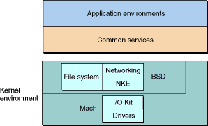
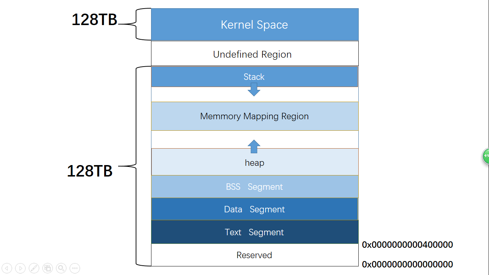
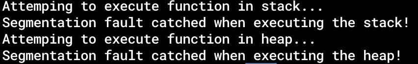

在 Apple Silicon Mac 上入门汇编语言
2019年，我在GitHub上创建了一个仓库Assembly-on-macOS。在这个仓库里，我写了十三篇博客，从头开始讲如何在macOS系统上入门汇编语言。3年过去了，我对二进制程序分析、汇编语言有了更深入的认识，文笔也有所长进，与此同时，Apple也在更换Mac的架构，将其从intel的amd64架构迁移到ARM的AArch64架构上。因此，我打算重制（也许是remake，也许是remaster，不如叫reforge吧）这个系列，面向使用Apple Silicon Mac的开发者，系统介绍AArch64架构汇编语言的入门知识。
HTML版本：https://evian-zhang.github.io/learn-assembly-on-Apple-Silicon-Mac/index.html
PDF版本：在HTML版本的右上角选择「打印」即可。
本人并不是精通汇编语言的大师，写下这一系列也只是记录自己的学习，与各位共同进步。所写文字必有错误阙漏，刍荛之言，望大家不吝斧正。欢迎大家在本仓库中提出Issue或者PR。
背景
我一直认为，对于一个软件开发者而言，了解一些底层的知识是十分必要的。对于汇编、操作系统、处理器的初步了解，十分有利于在日常软件开发中排除bug、优化性能。
但是，对于手持Apple Silicon Mac（即芯片为M系列的Mac）的开发者而言，入门汇编语言却相对更加困难。
- 如今国内大部分的中文教材，还是停留在32位甚至16位的处理器上，有些还需要DOS来模拟。
- 虽然也有一些更现代的书籍、博客会介绍如今主流的64位处理器的汇编语言，但是这些介绍往往是基于Linux和Windows操作系统，在macOS上仍然会有一些差异（如mach-O格式的段、节的名称，命名粉碎机制，系统调用号等）。
- 就算终于找到了基于macOS的汇编语言入门的文章，也往往都是两三年前所写，仍然基于intel的amd64架构。而Apple Silicon的Mac则使用ARM的AArch64架构，两者更是完全不同。
在macOS上使用Docker等虚拟化方案，虽然可以让我们接触amd64架构的Linux系统，但为什么不用原生的呢？
因此，本系列将针对使用Apple Silicon Mac的开发者，介绍AArch64架构汇编语言的入门知识。
需要指出，我写的这一系列文章，并不旨在让读者成为macOS底层的专家，而是让手持Apple Silicon Mac的开发者轻松地入门汇编语言，进而为我国软件独立自主作出自己的贡献。
本系列的目的是让没有接触过汇编语言的开发者，会读、会写汇编语言，既能使用汇编语言写出一些高性能的代码，也能读懂二进制软件的逆向。只不过使用的是AArch64架构，用macOS操作系统。因此，在本系列的文章中，大部分的知识都是跨系统、跨平台都适用的概念，对于macOS独有的一些概念，并不会着重介绍。但也不必担心，本系列中的所有过程、步骤，都可以在macOS上原生执行。
前置知识要求
本系列的前置知识要求并不高，主要包括以下三点：
- 能看懂C语言编写的程序
- 适当了解计算机体系结构知识
- 能够简单使用命令行进行操作
编程环境
我在写这系列文章时，所使用的环境为：
-
芯片
Apple M1 Pro
-
操作系统
macOS 12.4
-
操作系统内核
Darwin Kernel Version 21.5.0
-
XNU源码版本
xnu-8020.101.4，下载于apple-oss-distributions/xnu -
clang版本Apple clang version 13.1.6 (clang-1316.0.21.2)
参考资料
- Using
as - OS X Assembler Reference
- Armv8-A Instruction Set Architecture
- Arm Architecture Reference Manual for A-profile architecture
- ARM Assembly Language
- Writing ARM64 Code for Apple Platforms
License
本仓库遵循CC-BY-4.0版权协议。作为copyleft的支持者之一，我由衷地欢迎大家积极热情地参与到开源社区中。Happy coding!
底层的整数
在正式介绍汇编语言之前，我会先用几篇文章讲一些数学基础和硬件基础。如果读者已经具备了一定的知识基础，可以直接跳过这些文章去汇编语言部分。这一篇文章中，我将主要讨论“数”这一概念在底层的体现。
数的表示
在计算机底层的软件层面，我们通常采用二进制，八进制或十六进制来记录数字，其中最常用的是十六进制。所谓\(n\)进制，就是从0开始数，逢\(n\)进1. 比如说二进制，就是从0开始数，到1，然后到2的时候进1变成10. 八进制也是类似，但是到了十六进制就犯了难，我们的数字只有0到9这十个，并不能表示出16个呀，于是，我们默认使用了a到f这六个字母来分别表示10到15这六个数。也就是说，十进制数10对应的十六进制数是a, 十进制数26对应的十六进制数是1a. 在大部分计算机术语中，我们通常用0x开头表示十六进制，用0开头表示八进制，而没有前缀来表示十进制。因此，比如说以下的汇编代码（并不需要理解实际含义）
sub sp, sp, #0x1a
与
sub sp, sp, #26
的效果相同。
十进制数与十六进制数的转化可以在搜索引擎上找到，这里不再赘述。而八进制，十六进制数与二进制数的转换则十分简单。一个八进制数的一位代表一个二进制数的三位，比如说八进制数的一位5就代表二进制数的三位101; 同理，一个十六进制数的一位就代表二进制数的四位。因此，十六进制数0x2000001就代表二进制数0010000000000000000000000001.
我们知道，之所以使用二进制数，是因为计算机底层采用高电平/低电平这种方法来表示数。那么，我们为什么要使用八进制、十六进制呢？我们知道，如今的计算机大多采用64位系统，意思是说，任何一个地址都是一个64位二进制数。那么，如果我们只采用二进制来表示一个地址，那么得有64个0或者1, 这不仅让我们看花眼了，而且也极大的浪费了电脑的显示资源。而刚才讲到的十六进制数则帮我们解决了这个问题。我们知道，十六进制数的一位对应二进制数的4位。因此，一个\(n\)位二进制数，只需要\(\lceil\frac{n}{4}\rceil\)位十六进制数即可。也就是说，我们要表示64位的地址，只需要16位十六进制数即可。
整数的记录
进制问题解决了在计算机底层软件中数的表示问题，接下来还需要解决的是记录问题，也就是说，如何把数实际存储在寄存器中（下面以8位寄存器为例）。
一个最直观的想法，就是这个数是多少，就把它的二进制数存进寄存器中。例如，对于十进制数154，我们就在寄存器中存储二进制数10011010。这样，我们寄存器中可以存储的数的范围就是\(0\sim 2^{8}-1\)。
原码
但是，我们在日常的编程中，往往需要用到负数。按我们上面的做法，是没有办法存储这种符号信息的。解决这个问题，我们第一个想到的就是在这寄存器的8个位中，取一个位表示符号。例如，我们可以取最高位表示符号，1表示负数，0表示整数。那么，10011010就表示负的二进制数11010，也就是-26。在这种情况下，我们寄存器中可以存储的数的范围就是\(-2^{7}+1\sim 2^{7}-1\)。这种方式我们称作“原码”存储方式。
那么，所有整数都按上述方法用原码存储可以吗？我们知道，在编程中虽然会用到负数，但也会有许多情况只用到非负数（例如取数组下标的时候）。那么，如果用原码存储，我们只能用到\(0\sim 2^{7}-1\)这么多非负整数，比我们第一种不存储符号的方法少了接近一半可以用的数字，这让我们非常难以忍受。因此，我们需要提出一个共识：有符号整数与无符号整数共存！有符号整数，就是指其存储时包含了符号信息，就我们刚才所提出的方案来看，就是最高位存储符号；无符号整数则相反，其存储不包含符号信息，也就是我们提出的第一个方案，是多少就存多少，只能表示\(0\sim 2^{8}-1\)。
如果按原码存储有符号整数的方案，我们来考虑以下场景。寄存器A中存储了二进制数11100001，寄存器B中存储了二进制数00000111。按我们目前提到的方案来看，如果要计算加减，会变成这样：
-
如果A和B存储的是有符号数
A存储十进制数-97，B存储十进制数7。A与B相加为-90，二进制数为
11011010；A与B相减为-104，二进制数为11101000。 -
如果A和B存储的是无符号数
A存储十进制数225，B存储十进制数7。A与B相加为232，二进制数为
11101000；A与B相减为217，二进制数为11011010。
我们的CPU如果需要同时支持有符号数和无符号数的加减法，我们会发现，有符号数的加法与无符号数的减法得到的存储结果一致，反之亦然。如果按这种设计，我们需要在实现加法的时候首先判断是否有无符号，其次我们得同时实现加法器和减法器。
有没有更好的方法？
补码
我们来看看天才般的先行者是怎么做的。
下面，我们用\(\alpha=f(a)\)表示将整数\(a\)记录到寄存器中，其中寄存器的值直接转化成无符号二进制数为\(\alpha\)。例如，按照我们之前的说法，10011010就表示负的二进制数11010，也就是-26，那么，\(f(-26)=154\)，因为10011010直接转化为无符号二进制数就是154。
那么，我们之前讲的对于无符号整数的记录方法就很直接：
$$ \alpha =f_u(a)=a $$
我们该如何记录有符号整数呢？
首先，我们需要指出，由于寄存器的位数是有限的，因此对于一个\(n\)位寄存器来说，如果
$$ f(a)\equiv f(b)\pmod{2^{n}} $$
那么\(a\)和\(b\)存储到寄存器中时，是没法看出差别的（因为它们在寄存器中的表现是相同的），也就是说，可以认为\(a=b\)。
我们天才般的先行者提出了补码的概念，对于有符号整数的记录：
$$ \alpha =f_s(a)=\begin{cases} a&0\leq a\leq 2^{n-1}-1\\ 2^{n}+a&-2^{n-1}\leq a<0 \end{cases} $$
容易验证，对于两个寄存器中的值\(\alpha=f_u(a_u)=f_s(a_s)\)和\(\beta=f_u(b_u)=f_s(b_s)\)，我们有：
对于无符号加法：
$$ f_u(a_u+b_u)\equiv f_u(a_u)+f_u(b_u)=\alpha+\beta\pmod{2^{n}} $$
对于有符号加法：
$$ f_s(a_s+b_s)\equiv f_s(a_s)+f_u(b_s)=\alpha+\beta\pmod{2^{n}} $$
对于无符号减法：
$$ f_u(a_u-b_u)\equiv f_u(a_u)+f_s(-b_u)\pmod{2^{n}} $$
对于有符号减法：
$$ f_s(a_s-b_s)\equiv f_s(a_s)+f_s(-b_s)\pmod{2^{n}} $$
还是以我们之前的场景为例。寄存器A中存储了二进制数11100001，寄存器B中存储了二进制数00000111。按补码方案来看：
-
如果A和B存储的是有符号数
A存储十进制数-31，B存储十进制数7。
A与B相加为-24，其补码为
11101000，正好就是11100001+00000111=11101000。A与B相减为-38，其补码为
11011010。其计算方法为，先求-7的补码，为11111001，然后再直接相加11100001+11111001=11011010。 -
如果A和B存储的是无符号数
A存储十进制数225，B存储十进制数7。
A与B相加为232，在寄存器中为
11101000，正好就是11100001+00000111=11101000。A与B相减为218，在寄存器中为
11011010。其计算方法为，先求-7的补码，为11111001，然后再直接相加11100001+11111001=11011010。
由此可见，在这种方法下，无论将寄存器中的值看作有符号数还是无符号数，其加法与减法都只需经历相同的运算，并且得到的结果在寄存器中相同。也就是说，我们只需要实现一个加法器（以及一个求补码的器件），就可以实现所有有符号数与无符号数的加减法了。
提到有符号整数与无符号整数，我们有一点需要知道。在寄存器中存储的数本身，讨论其是有符号整数还是无符号整数是没有意义的。举个例子，我们有一个8位的寄存器，其内容为二进制数10001111。这个寄存器内的数有符号吗？答案是它不含符号信息。它既可以是有符号整数-0x71，也可以是无符号整数+0x8f。按我们上面所讲的补码的优势可以看出，CPU在进行两个数相加减的时候，是不需要知道处理的数究竟是有符号数还是无符号数的（事实上，CPU是将处理的数同时看作无符号整数与有符号整数来处理的，不过在这里不影响我们的讨论）。也就是说，在某种意义上，CPU是完全不知道存储在寄存器里的值是有符号的还是无符号的。
溢出
在讨论补码的时候我们提到，由于寄存器的宽度是有限的，因此一个寄存器能表示的数是有限的。这就带来了溢出的问题。
什么是溢出呢？具传言（内容引自萌娘百科）：
在初代《文明》中，印度的基准好战度为1，是整个游戏最低的；然而，当玩家在游戏中选择市政“民主政治”(Democracy，效果为所有AI好战度-2)时，会导致数据溢出，从而使甘地的好战度涨为255，使得印度一跃成为全游戏最好战的文明；再加上该作科技树上解锁该市政的科技与解锁核武器的科技位置十分接近，导致游戏中后期印度十分喜欢造核弹扔核弹，自此初代印度领袖莫罕达斯·甘地得名“甘核平/核平使者”。
下面，我们假设在这款游戏中，好战度的值被存储在一个8位的寄存器中。那么，基准好战度为1时，寄存器中的值为00000001。当对其减2时，按照我们上述求减法时的算法，可以得出在寄存器中的值为11111111。如果这个寄存器的值在程序中被视为无符号整数，那么它的值就是255，也就是最大的无符号整数的值了。
这就是溢出的问题。由于寄存器能表示的数是有限的，因此如果不对进位进行判断，那么加减法产生的溢出会造成一定的安全隐患。
在《文明》的例子中，实际上是由减法借位产生的下溢出。那么，有没有相应的上溢出的例子呢？
在初学ASCII码的时候，我想看一看所有的ASCII码对应的字符长什么样。因此，我写了如下的C语言代码：
for (unsigned char ch = 0; ch <= 255; ch++) {
printf("Char with ASCII %d is %c\n", ch, ch);
}
上面这个代码存在问题吗？把上述代码编译运行一遍会发现，它 停 不 下 来！
为什么会产生这种情况呢？当ch为255时，循环结束会进行ch++的操作，而unsigned char类型的ch值255在寄存器中存储的形式为11111111，对其加1，按照我们之前加减法的法则，会得到00000000，会被程序看作0，仍然不满足循环终止的条件，因此这个循环会停不下来。这就是由上溢出产生的问题。
整数的逻辑运算
除了加减乘除以外，二进制整数还有独特的运算——逻辑运算，分别是与(and), 或(or), 非(not)和异或(xor)。其运算规则相信大家都已经很了解了。
这里要特别指出，如果把一个寄存器与自身异或，效果会是怎样的呢？例如：
eor w0, w1, w1
上述汇编代码的含义是，将w1寄存器的值与自身异或，将结果存储于w0中。
在这条汇编指令执行之后，w0的值会是多少呢？按照异或的规则，两个相同的值异或结果为0。因此，无论w1的值是多少，在这条指令执行之后，w0的值始终为0。
在某些CPU指令集架构下，编译器会倾向于使用这种指令来将寄存器的值清零。
在污点分析中，我们想探索某个寄存器的值最终被传播到了哪些内存地址上。但如果遇到这种指令时，目标寄存器的值被清空，我们就不需要继续跟踪这个寄存器了。因此，这种指令也是特殊的“漂白指令”。
底层的浮点数
之前我们讲了整数怎样在底层记录，那么这里将介绍如何在底层记录浮点数。所谓浮点数，我们可以理解成以下两种数：
-
小数
也就是如0.5，3.1415926这样的小数
-
大数
非常大的数，一般用科学记数法表示，如114e514
我们可以发现，这两种数都可以表示为
$$ f\times 2^e $$
的形式，其中\(-2< f <2\)，\(e\)为整数。例如，二进制小数11101.1101可以看作\(1.11011101\times 2^{4}\)，而0.001101可以看作\(1.101\times 2^{-3}\)。在术语里，我们称\(f\)为尾数，\(e\)为指数。
根据这个发现，我们知道，任何数都可以唯一地表示成符号、尾数和指数的组合。因此，目前通用的浮点数算术标准IEEE754标准就规定了浮点数的存储方式为，存储其符号、尾数和指数的组合。其具体标准很枯燥，我们可以用一张图简单地说明一下：
sign exponent fraction
| | |
--- --------------------------- ---------------------------------------
| | | |
--- --------------------------- ---------------------------------------
我们常用的浮点数类型包括：
-
单精度浮点型（
float）长度为32位， 其中有23位尾数，8位指数
-
双精度浮点型（
double）长度为64位，其中有52位尾数，11位指数
这些标准乍看上去难以理解，令人头痛，那我们不妨直接来看一个浮点数常见的问题。
浮点数算术的精度问题
我们有一个C程序：
double a = 0.1;
double end = 0.3;
while (a != end) {
a += 0.1;
}
这个程序的输出会是怎样的呢？将其编译并运行可以发现，这居然又停不下来了。这是为什么呢？
要想一探究竟，我们可以编写一个辅助函数：
void display_double_in_binary(double f) {
char *d = (char *)&f;
for (int i = 0; i < sizeof(f); i++) {
printf("%.2x ", d[i] & 0xff);
}
printf("\n");
}
这个函数可以输出浮点数的二进制表示。具体的程序位于codes/2-floating-precision.c。
我们通过这个辅助函数，可以看到：
Term end = 0.300000 bin: 33 33 33 33 33 33 d3 3f
Round 1 a = 0.100000 bin: 9a 99 99 99 99 99 b9 3f
Round 2 a = 0.200000 bin: 9a 99 99 99 99 99 c9 3f
Round 3 a = 0.300000 bin: 34 33 33 33 33 33 d3 3f
end的16进制表示是0x3fd3333333333333，而当a加到0.3的时候，它的16进制表示是0x3fd3333333333334。这两者不一致，因此不会进入循环终止条件。
我们上面提到，要想将一个浮点数存储在寄存器中，需要首先将其转化为二进制的小数。那么，0.1转化为二进制小数为0.0001100110011001101...，而0.3转化为二进制小数为0.01001100110011001101...。我们震惊地发现，十进制小数转化成的二进制小数居然不整。
这下就能解释为什么这个程序停不下来了。由于转化的二进制小数不整，因此存储在寄存器中时，发生了截断，产生了一定的误差。那么，在进一步计算时，误差就会累积，从而几乎没有可能真正到达0.3。这就是浮点数算术的精度问题。
这种精度问题在我们实际的生活中会遇到吗？下面，我就介绍一个在Dark Souls速通中被发现的一个Meme Roll Glitch（视频讲解可以看B站搬运的视频《黑暗之魂》中“最疯狂”的skip是如何诞生的的24:45秒开始）。
在Dark Souls中，从高空坠落会受到伤害，当高度高于一定阈值时，人物会死亡。在游戏速通中，玩家希望通过一些地方的跳跃到达后期才能去的地区，从而绕过很多步骤，节省大量的时间。但是，这些跳跃往往高度都非常高，会造成角色的死亡，直接跳显然是不行的。在Meme Roll Glitch发现之后，这个问题终于得到了解决。
提出这个Glitch的玩家发现，当角色的负重在25%与25.000088%之间时，角色可以在高空坠落的过程中不断地翻滚，从而利用翻滚的无敌帧避开坠落的伤害。但是，负重在游戏中的最小计量单位是0.1%，理论上不可能使角色的负重在这个范围内。这就需要浮点数算术的精度问题了。由于浮点数本身采用二进制小数进行存储，所以不可能精确等于其十进制数值。因此通过仔细地调整装备与耐力等级，不断利用浮点数算术的精度误差，最终能使角色处在这一负重范围内，最终实现无伤害坠落。
浮点数能建立全序关系吗？
在一些现代编程语言中，编译器会很聪明地阻止我们干一些事。例如，如果我们想用Rust语言对浮点数的数组进行排序：
#![allow(unused)] fn main() { let mut s = [1.0, -3.5, 4.7]; s.sort(); }
会发现编译不通过，提示"the trait Ord is not implemented for {float}"。这是为什么呢？要解释这一问题，我们不妨先了解一下IEEE754标准里几个特殊的常数（可以参考codes/2-special-numbers.c）。
-
零值
之前我们提到，存储浮点数时会存储其符号信息。但是，其余数字的存储并不一定会像整数一样使用补码。事实上，在IEEE754标准里，有两个零值：
+0.0与-0.0。零值存储的值是不同的：
+0.0存储的值为0x00000000，-0.0存储的值为0x00000080。但是，在比较运算中，
+0.0与-0.0是相等的。 -
INFINITY代表无穷大， 有
+INFINITY与-INFINITY两个值。一般可以通过
1.0/0.0以及1.0/-0.0得到无穷大值。在比较运算中，
+INFINITY大于所有除了其本身的值；-INFINITY小于所有除了其本身的值。 -
NAN代表非数值。有
+NAN和-NAN两个值。可以通过对
-1.0开方等操作得到。其与任何数都不相等。也就是说，
NAN != NAN，-NAN != -NAN。也无法进行比较，也就是说，NAN于任何数进行小于、大于的比较，返回结果都是false。
介绍了这些特殊的常数，那么，我们就可以解答为什么f32不满足Eq的trait了。
Ord trait，就是全序关系。集合\(X\)上可以建立全序关系，意思就是说：
对于\(X\)中的元素\(a\), \(b\), \(c\)有：
-
反对称性
如果\(a\leq b\)且\(b\leq a\)，则\(a=b\)
-
传递性
如果\(a\leq b\)且\(b\leq c\)，则\(a\leq c\)
-
完全性
对于\(X\)中的任意元素\(a\)和\(b\)，都有\(a\leq b\)或\(b\leq a\)
对于我们最常接触的整数来说，这些性质是非常显然的，因此整数可以建立全序关系。
但是，对于我们刚刚提到的IEEE754定义的浮点数类型来说，由于NAN与任何数都不相等，因此浮点数不可以建立全序关系，从而不满足Ord trait。
直观地，我们也可以看出来，NAN这样特殊的数，无法进行比较，从而如果出现在数组中，对其排序是没有意义的。
硬件基础
在之前的文章中，我们讲了一些计算机底层的数与表示的问题。在这篇文章中，我们主要讨论的是硬件基础。由于汇编语言实际上是底层硬件的一个抽象，因此，我并不想太多地涉及底层硬件，只想大致讲一下我们在汇编语言中常接触到的硬件相关知识。但这里要指出的是，实际上硬件层面远不止这么简单，甚至比软件层面还要复杂得多得多。
CPU、内存与硬盘
打开我们的Mac的系统信息，我们可以看到处理器和内存型号：

在磁盘工具中，我们也可以看到硬盘的型号：

处理器（即CPU）、内存和硬盘，这三者究竟有什么关系呢？
通过一个简单的计算我们可以知道，一块硬盘的大小为512GB, 那么一共有512,000,000,000个存储单元，也就是约10的11次方个存储单元；一块内存的大小为16GB, 那么一共有16,000,000,000个存储单元，也就是约10的10次方个存储单元；而一块M1 Pro的CPU，由于采用ARM架构，因此一共有31个通用寄存器。
因此，一块硬盘的存储容量是一块内存的数十倍，是一个CPU的10,000,000,000倍！
那么，我们为什么要有这样的区分呢？能不能整个电脑的存储全用CPU的寄存器来做呢？答案是：理论上能，但实际上人类科技水平达不到，而且即使做出来也太贵了。我们从一个只有CPU，存储全靠寄存器的电脑入手，看如何能降低科技要求，削减开支。
CPU的功能是什么？是将寄存器中存储的值放到各种运算单元中进行处理。那么，我们在运行一个程序的时候，可能这个程序会有数以千计个变量，但是，在一段时间内参与运算的变量的个数却是非常少的，许多变量在参与运算后的很长一段时间内都不会再次参与运算。那么，我们不如只在CPU中保留少量的寄存器，用于存储当前参与运算的变量。然后将大部分不参与运算的变量存储在别的地方，在需要它们的时候再把它们导入到寄存器中。这就是内存(Memory)的功能。换句话说，CPU的功能主要是在寄存器中存储当前需要参与运算的变量，并可以用极高的速度将这些变量进行运算（从硬件层面上来讲，寄存器直连各种运算的器件）。当需要参与的变量不在寄存器中时，向内存发出访问申请，内存将变量导入CPU的寄存器中（这个时间与CPU寄存器参与运算的时间而言较慢）再参与运算。因此，内存的存储单元的速度可以比CPU的寄存器的慢一些，所以造价也就可以便宜一些。
那么运算全靠CPU，存储全靠内存，行不行呢？我们知道，在电脑中，不止有正在运行的程序，还有一些用于长期存储的文件。这些文件几乎很长时间才会运行一次。但是，CPU申请访问这些文件和申请访问那些经常运行的程序的优先级是相同的。这样的话，就会造成浪费。同时，CPU和内存也可以做到每次通电（也就是电脑启动）以后才会开始读写，一旦掉电（也就是电脑关机）那么所有数据就会消失。因此，我们将一些用于长期存储、电脑关机以后仍然需要保存的数据放到了硬盘(Disk)中，在程序运行的时候，将硬盘中的数据加载到内存中，再在CPU中参与运算。这样，硬盘的读写速度可以再进一步降低，成本也就进一步下降。
打个比方来说，硬盘、内存和CPU的关系就像是衣橱、工作台和针的关系。衣橱中存放的是已经编织好的衣服和一些毛线。当我们需要编织的时候，将毛线放在工作台上，然后用针穿起需要织的那一根线，进行编织。
存储单元
在内存和硬盘中，数据的存储的基本单位都是字节(Byte)。我们知道，在硬件中表示数据都是采用的二进制位，也就是0和1. 我们称每一位这样的二进制位为一个比特(Bit). 而一个字节，就是连续的八个比特。我们在汇编语言中，大部分情况下需要处理的最小的单位就是字节。一个字节，也可以看作是一个8位二进制数，或者一个2位16进制数。1字节常记做1B, 1比特常记做1b. 我们常用的单位还有KB(Kilobyte), KiB(Kibibyte), MB(Megabyte), MiB(Mebibyte)与GB(Gigabyte), GiB(Gibibyte). 严格来说，1KB=1000B, 1KiB=1024B, 1MB=1000KB, 1MiB=1024KiB, 1GB=1000MB, 1GiB=1024MiB. 在macOS以及iOS中采用的是这种标准的记法（可参考iOS 和 macOS 如何报告储存容量）。
内存和硬盘都是顺序编址。也就是说，我们要访问内存或者硬盘中的一个存储单元，那么就像我们想找人一样，首先要有它的名字。内存和硬盘给了每个存储单元（也就是一个字节）一个地址。相邻的存储单元的地址相邻。但是，内存和硬盘不同的一点在于，内存是随机访问(random access)的，也就是说，我想访问地址0x0123456789abcdef, 那么可以直接选择到这个地址，而不需要从0号地址开始向后找。最早期的硬盘则是要求顺序访问，也就是从某个特定的编号开始向后找。但后期的闪存技术可以弥补这一缺点。顺便提一句，内存这一随机访问的特点保证了顺序表（也就是C语言中的数组）的O(1)的查找复杂度。
AArch64架构下的CPU中，通用寄存器都是64位，也就是8个字节。由于CPU是老大，因此，程序啊什么的都是跟着CPU来的。因此，在AArch64架构下，有的数据的大小是64位。这在CPU内部的运算中没什么问题，但遇到与内存交互时就犯了难。比如说，我有一个数据0x0123456789abcdef, 如果要从CPU中导到内存中，内存是按字节编址，也就是1个字节对应1个地址。那么，这个数据应该怎么存储在内存中呢？是01 23 45 67 89 ab cd ef还是ef cd ab 89 67 45 23 01呢？这就涉及到了端序的概念：
little address ----------------> big address
big endian:
01 23 45 67 89 ab cd ef
little endian:
ef cd ab 89 67 45 23 01
事实上，AArch64可以同时支持大端序和小端序。在Apple Silicon中用的是小端序：
Both Apple silicon and Intel-based Mac computers use the little-endian format for data, so you don’t need to make endian conversions in your code. However, continue to minimize the need for endian conversions in custom data formats that you create.
当然，我们也可以写一个程序来轻松确认（代码可以参考codes/3-endianness.c）：

CPU
现在CPU技术越来越发达，因此相关的技术、术语也越来越多。在我们学习汇编语言的过程中，有必要将一些与CPU相关的术语弄清楚。
首先，每一个CPU都有其制造厂商与标准制定厂商。Apple Silicon的指令集架构标准是由ARM制定的，所以在某些场合，人们习惯将Mac分为Intel Mac与ARM Mac。
指令集架构（Instruction Set Architecture, ISA）描述了如何通过软件控制CPU，是软件与硬件之间的一个中介。ISA定义了包括支持的数据类型、寄存器、硬件如何操作主存储器等特性，可以参见What Is an Instruction Set Architecture?。总的来说，就是大部分和计算机体系结构相关的具体细节。
具体到我们目前使用的CPU而言，ARM推出了ARMv8处理器架构。该架构分为三个Profile：
-
ARMv8-A (Application)
高性能处理器架构
-
ARMv8-R (Real-Time)
针对实时系统进行优化
-
ARMv8-M (MicroController)
针对小型、低能耗、高能效的设备
目前Apple Silicon使用的是ARMv8-A Profile。
ARMv8指令集架构包含两个执行状态：32位执行状态与64位执行状态。这两个执行状态分别能执行32位的应用程序与64位的应用程序。64位的执行状态被称为AArch64。在许多应用开发的过程中，也将AArch64称为指令集架构，意为64位的ARM指令集架构。
CPU可以执行的指令组成的集合被称为指令集（Instruction Set）。AArch64状态下的指令集为A64指令集。
此外，ARM也自己研发处理器，其处理器一般命名为Cortex系列。
操作系统
当我们学习汇编的时候，除了数学基础以及硬件基础以外，操作系统的基础也是一个至关重要的环节。汇编语言本质上就是机器码的human-readable的版本，而硬件相同，则同一个程序的机器码一定相同。那么我们为什么还要研究操作系统呢？这是因为，我们通过汇编语言，最终得到的可执行文件是与操作系统有关的，是操作系统来决定我们如何装载、执行这些可执行文件。此外，不同操作系统提供的库、系统调用并不完全相同。因此，只有了解了操作系统以后，才能更好地编写汇编语言。
Darwin与XNU
macOS的基本架构如下：

macOS建立在Darwin操作系统之上，以Aqua为图形化界面。Darwin操作系统的内核是XNU. 我们可以通过在终端下键入
uname -a
来查看Darwin和XNU的版本号。我在macOS 下的结果如下：
XNU是开源的，Aqua图形化界面是在Apple专利下的。
简单来讲就是，我们用的macOS里各种图案、交互都是Apple专利下的，而系统的运行、内存的分配等等底层的操作系统都是开源的。事实上，国外也有社区在提供基于Darwin操作系统的开源的系统，如PureDarwin.
接下来，我们重点关注的是Darwin操作系统的内核——XNU.
正如上面macOS的基本结构的图中所示，XNU位于macOS的最底层——Kernel and Device Drivers. 下面这张高糊的图在Apple的官方文档中用于描述macOS内核架构：

总的来说，XNU是一个混合型内核，其最重要的三个部分为Mach, BSD以及IOKit。
操作系统内核
从高层应用开发者的角度来看，操作系统内核就是提供了许多核心功能，如进程管理、文件系统等功能的一个“黑盒子”。那么从底层来看，操作系统内核究竟代表什么呢？
特权级
从底层的角度来看，内核态与用户态的一大区别就是，一些用户态不被允许执行的指令、不被允许访问的内存地址，可以在内核态去执行、访问。CPU是如何实现这个功能的呢？这就要提到特权级的概念。
在ARM中，特权级被称作异常级别（Exception Level）。一般来说，存在一个寄存器存储当前的异常级别。当CPU进行指令执行、内存访问等操作时，会检查当前的异常级别，如果相应的指令、内存允许当前的异常级别，则继续正常执行。内核的异常级别比用户态高，从而也就实现了内核相对用户态的特权。
在AArch64架构下，有四种异常级别：
-
EL0
普通应用处于此异常级别
-
EL1
操作系统内核和相关的函数处于此异常级别
-
EL2
虚拟机监视器（Hypervisor）处于此异常级别
-
EL3
安全监视器（Secure monitor）处于此异常级别
在ARM官方文档中的这张图片可以比较直观地展示四种异常级别：

一般来说，由用户态程序进入内核态等特权级别提升的行为都是通过发出异常来实现的，也许是因为这种原因，特权级别在ARM中才被称作异常级别。在AArch64架构下，只能由低异常级别发起一个异常，希望切换到高异常级别；异常返回后，从高异常级别切换回低异常级别。
在Apple Silicon中，对于权限的管理也采用了额外的机制，具体可以参考Apple Silicon Hardware Secrets: SPRR and Guarded Exception Levels (GXF)这篇博客。
系统调用
我们刚刚提到，用户态可以通过发起异常的方式主动进入内核态。那么具体而言，用户态与内核态是如何交互的呢？
我们知道，操作系统内核拥有许多特权功能，例如分配内存、创建文件等。用户态的程序可以通过「系统调用」（System Call）的方式请求操作系统执行这些功能。所谓的系统调用，实际上就是特殊的机器指令（如svc等）。从某种意义上来说，操作系统就和我们在高级编程中使用的Cocoa, React等一样，是一种「框架」(Framework)。我们在编程的时候，可以直接使用框架提供的API. 同样地，我们在编写汇编程序的时候，也可以直接使用操作系统提供的系统调用。就像是我们在用毛线织衣服的时候，并不需要自己来养蚕缫丝，只需要在毛线不够的时候向毛线的提供者说一句，然后就由毛线的提供者工作来提供毛线。关于系统调用的具体使用方式，我们之后在汇编语言中还会详细阐释。
这一章我们重点是从操作系统层面了解一些与汇编有关的底层知识，因此，我们可以简单了解一下XNU是怎么实现系统调用的。
当用户通过svc等特殊的机器指令，在用户态发起系统调用后，CPU会切换成EL1级别，从而进入内核态。XNU内核会根据svc号判断用户希望进行的是Mach系统调用还是Unix系统调用（由于XNU是由BSD和Mach两种内核组成，所以才会分为两种系统调用。这也是使用「活动监视器」App查看进程统计数据时有「Mach系统调用」和「Unix系统调用」的原因）：

对于Unix系统调用来说，内核的内存空间中存在一张「系统调用表」。内核使用这张系统调用表，根据用户提供的系统调用号，查询相应的系统调用处理函数，完成系统调用。
对于源码爱好者来说，XNU内核处理系统调用的主要过程包括：
-
osfmk/arm64/sleh.c文件中handle_svc函数获得svc号。如果小于0，则为Mach系统调用，否则为Unix系统调用
-
bsd/dev/arm/systemcalls.c文件中unix_syscall函数- 获得Unix系统调用号
- 访问系统调用表
sysent，其由bsd/kern/syscalls.master文件生成 - 使用
callp->sy_call进行系统调用
所以说，在系统调用过程中，「系统调用表」是很关键的一环。对于大部分面向内核的恶意软件Rootkit，一般都是修改内核内存中的这张系统调用表，从而能够劫持用户的系统调用，使其执行自己想要执行的恶意逻辑。当然，现代的内核也对系统调用表有一定的保护机制，例如，系统调用表所在的内存页是只读的，不可修改。攻击者也可以通过某些手段，修改相应内存页的访问权限。此外，系统调用表也可以不导出到符号表中，从而攻击者不能直接得到系统调用表所在的地址。
内存虚拟化
操作系统内核负责的另一个非常重要的事，就是管理内存。
在「硬件基础」中，我们提到，所有进程都是在内存中运行的。现在常用的操作系统都采用了一个策略「内存虚拟化」，将逻辑地址与物理地址进行区分。我们知道，内存中的存储单元是以字节编址的，相邻的存储单元的地址相邻。这里实际指的是「物理地址」，也就是CPU在向内存发出访问请求时用到的地址。我们在编程中，遇到的地址都是「逻辑地址」。在一个进程启动时，操作系统会为每个进程分配64位逻辑地址空间，并在MMU(Memory Management Unit, 内存管理单元)中维护一个逻辑地址向物理地址的映射。也就是说，在我们编程时，物理地址对于程序员是透明的，程序员接触到的只会是逻辑地址。更具体地说，操作系统将地址分为4KiB, 也就是4096B大小的页(Page), 将逻辑地址的页与物理地址的页进行映射。在一个页内相邻的逻辑地址对应的物理地址是相邻的，但是页之间的物理地址的关系是不确定的。
64位逻辑地址空间，有多大呢？大约是18EB. EB是一种和KB, GB一样的单位，1EB是10的18次方字节。而据估算，2011年整个互联网的容量总和不超过525EB。因此，64位逻辑地址空间是非常非常大的，其总的大小远远大于实际的物理内存的大小。macOS为了解决这个问题，将一部分逻辑地址对应的页储存在硬盘上，准确地说，是/boot目录内。也就是说，当MMU在用逻辑地址向物理地址转化时，发现该逻辑地址在内存中没有对应物理地址，则将/boot目录内一部分数据调入内存中，作为那部分逻辑地址对应的存储空间。
我们可以注意到，事实上，操作系统在操作内存时，一般最小的单元都是一个内存页。无论是页的换入换出，还是内存访问权限的控制，都是以内存页为单位的。
Mach-O文件结构
对于任何一个在macOS上的可执行文件，我们可以用file命令行工具检查它的格式：

由此可知，在macOS上的可执行文件，都是Mach-O格式的文件。
关于Mach-O文件，详细可参考Apple官方文档Mach-O Programming Topics. 这里我们只是简单介绍一下。

如图所示，Mach-O文件由头(Header)、装载指令(Load commands)和数据(Data)组成。我们可以通过MachOView软件进行查看。其中，最重要的组成部分就是Data.
我们可以从图中看到，Data可以分为多个段(Segment), 每个段又可以分为多个节(Section). 从逻辑角度来看，每个段内的节存储的数据都有类似的目的。如__TEXT段内存储的有汇编源代码、字符串等，__DATA段内存储非常量初始化变量等。从内存管理角度来看，每个段的大小被要求是页大小的倍数，也就是4096B的倍数。当程序加载时，就可以正好将一个段加载到一个页内。
进程内存
在操作系统的内存虚拟化一节我们讲到，每一个用户态进程都有一个完成的虚拟内存空间。在这个独立的虚拟内存空间中，也有一些我们需要注意和掌握的知识。
进程空间布局
当我们启动一个进程时，它的虚拟内存空间中的布局是怎样的呢？下图是我在网上顺手找的一张Linux系统上的进程空间（我实在找不到准确的macOS的进程空间布局的图了），我们可以借助这张图帮助我们理解。

-
内核空间
内核所在的物理页，会在每个进程启动时，映射到该进程的高地址空间中。
-
二进制可执行程序映射的空间
操作系统会将我们的二进制可执行程序，也就是Mach-O格式的文件中的一部分内容，加载到内存中。包括程序的代码段（存储程序的所有指令）、数据段（全局变量等）等区域。
-
栈和堆
操作系统会在内存中开辟两块区域：栈和堆。栈位于较高的地址空间中，由上向下增长，一般用于存储局部变量。堆区域一般用于存储运行时动态分配的变量。
上述概念看上去晦涩难懂，这是由于我们并没有真正接触汇编语言导致的。不过不用担心，在之后的章节中，会有对这些信息更详细的介绍。
内存页的访问控制
我们之前提到，操作系统对于内存的访问控制的最小控制单元是一个内存页。那么，在我们普通的用户态程序开发过程中，这一权限控制具体有什么影响呢？
内存页的访问控制往往是为了安全。当攻击者攻击一个程序的时候，有时候会需要程序执行攻击者自己编写的代码。因此，攻击者有时会利用程序使用scanf、fscanf等函数读取外界输入时，将自己的恶意载荷注入到进程中。程序读取外界输入后，往往会存储在堆区或者栈区。因此，攻击者的恶意载荷也会存储在堆区或者栈区。
鉴于此，操作系统的做法就是将堆区和栈区所在的内存页的访问权限标记为不可执行。因此，即使攻击者将自己的代码注入到了进程空间中，也无法进一步地执行相应代码。
我们可以实际操作来感受一下这种访问控制。在codes/4-memory-access.c文件中，我们分别试图执行一个指向栈上的函数指针，和一个指向堆上的函数指针。编译并运行它，输出如下：

可见，确实无法执行栈上和堆上的数据。这种保护也被称作数据执行保护（Data Execution Protection, DEP）。
ASLR
攻击者如果想要攻击一个程序，一般来说第一步就是需要知道被攻击的代码或者数据所处的地址。那么，安全人员就希望从源头遏制这种攻击。因此，ASLR的概念就引入了。
从Mac OS X 10.5开始，Apple引入了地址空间配置随机加载(ASLR)机制。在每次程序执行的过程中，程序在内存中的开始地址，堆、栈、库的基地址都会随机化，这样可以更好地保护不受攻击者攻击。
我们知道，在C语言中，局部变量是在栈上分配的。那么，我们有如下C语言程序：
int main() {
int a = 0;
printf("The address in the stack is:\t0x%p\n", &a);
return 0;
}
编译后运行三次：

我们可以发现，每次运行时，a的逻辑地址都不同，似乎是一个随机值加上一个固定的偏移量。
这就是ASLR的作用。由于每次运行时的地址不同，所以攻击者难以直接通过地址进行恶意行为。
PIE
ASLR的主要作用是随机化了栈和堆的基地址。那么，对于Mach-O二进制可执行文件映射到内存的部分呢？对于这一部分，要想随机化它们的地址实际上有一定的难度。在之后的汇编语言学习中我们会了解到，对于全局变量的访问、对于函数的跳转等等，原本大部分都需要实际的绝对地址。因此，一些十分聪明的前人提出了一些方案，在编译器层面做了一些改进，最终才能实现对这一部分内存空间的随机化。类似这种程序内部不依赖绝对地址的二进制程序，被称为Position Independent Executable, PIE。
第一个汇编程序
通过前几篇文章，我们逐步建立了学习汇编语言之前需要的基础知识。接下来，在这篇文章中，我们开始编写我们的第一个汇编程序了。
编辑器，汇编器与链接器
工欲善其事，必先利其器。我们编写汇编语言，至少需要编辑器、汇编器和链接器。编辑器，就是提供语法高亮、智能缩进、自动补全等功能的文本编辑软件，汇编器与链接器则是汇编语言需要的核心装备，其功能我会在接下来的几篇文章中提到。我使用的编辑器是Visual Studio Code, 汇编器是自带的as, 链接器也是自带的ld。除了编辑器以外，汇编器和链接器应该都是macOS自带的，无需额外安装。
第一个程序
我们在编辑器中输入如下语句，并在自己的目录下保存为5-basic.s.
# 5-basic.s
.section __TEXT,__text
.globl _main
.p2align 2
_main:
mov w0, #0
ret
然后在终端下进入该目录，键入如下命令：
as 5-basic.s -o 5-basic.o
然后再键入（关于这个指令为什么这么复杂，我在macOS上使用链接器的正确姿势中详细论证了其必要性与正确性）
ld 5-basic.o -lSystem -L $(xcrun --show-sdk-path -sdk macosx)/usr/lib -o 5-basic
此时该目录下应该会有一个叫5-basic的可执行文件，我们在终端下运行它：
./5-basic
然后，什么都没有发生，程序自动退出了。大功告成！
关于这个程序的解释，我决定下篇文章再讲。这篇文章接下来的篇幅，我打算谈一谈汇编器与汇编语法。
汇编语法
汇编语言是机器码的human-readable版本。虽说如此，汇编语法之间也会有细微的区别。AArch64的汇编器主要有两种语法：armasm的和GNU的。这两种语法有细微的区别。我这篇文章中主要用的是GNU语法，这也是用的最广泛的语法。
GCC与LLVM
我们知道，对于一门编程语言来说，它有对应的编译器和调试器。对于编译器来说，在类Unix系统上主要有两大阵营：GCC和LLVM. GCC包括C编译器gcc、调试器gdb等，LLVM项目包括C编译器clang、调试器lldb等。这些现代的编译器架构，都是将编译过程分为前端和后端，无论是在什么平台、什么CPU架构下，编译器前端都是相同的，将源代码编译成中间代码（GCC为RTL，LLVM为LLVM中间码(IR)）。而后端则是将IR再翻译成对应操作系统中对应CPU架构下的可执行文件。因此，如果有a种语言，b个操作系统和c个CPU架构，那么现在的编译器就不再需要设计abc种代码，而一共需要a种前端和bc种后端，最终效果是只需要a+bc种编译器代码。
对于高级编程语言，GCC与LLVM的竞争主要在于编译的优化、效率等，但是对于汇编语言，由于其可以直译机器码，所以并不存在汇编器优化，因此，在机器码层面，GCC和LLVM是等效的。在这一系列文章中我使用的汇编器as是LLVM的汇编器, 调试器是LLVM的lldb.
GCC套件是GNU操作系统的一个部分，GNU是开源的、社区驱动的。而LLVM项目也是开源的，现在主要是Apple在投资运行。因此，既然在macOS上，我就主要用的是LLVM系的工具。
汇编语言初识
上一篇文章中初步介绍了汇编语言的编辑器、汇编器与链接器，又让大家尝试了第一个程序。在本篇文章中，我们主要解释一下第一个程序。
# 5-basic.s
.section __TEXT,__text
.globl _main
.p2align 2
_main:
mov w0, #0
ret
注释
这个程序的第一行是注释。在macOS的as汇编器语法下，如果一行由#开头，那么这一行会被认为是注释行，在进行汇编的时候会自动将其处理为空白字符。
我们习惯上将注释写在语句的上方（如例程）或后方。在语句后方写注释时，一般采用;作为注释开头的符号，如：
mov w0, #0 ; Mov 0 to register w0
缩进
在最古老的机器上，汇编代码的文本包含四列：标签、助记符、操作数与注释。汇编器通过识别一个文本在哪个列来判断该文本有什么作用。现代的汇编器已经抛弃了这种方法，采用先进的词法分析技术来判断。但是，我们最好仍然按照这种格式来缩进。
也就是说，我们在写一个完整程序的时候，一般会将指令缩进4个空格，而如_main:之类的标签则不进行缩进。
汇编器指令(Directive)
"Directive"是汇编语言中一个重要的组成部分，然而它的中文译名似乎还不固定，这里暂且叫它汇编器指令。在汇编语言中，以.开头的都是汇编器指令，如例程中的.section, .globl等。由汇编器指令开头的语句，一般不会被直接翻译成机器码。汇编器指令并不是告诉汇编器做什么, 而是告诉汇编器如何做。就比如说例程中，mov w0, #0会被汇编器直接翻译为机器码，最终会由CPU直接执行，而.section __TEXT,__text, 则不会被翻译成机器码，在最终的可执行文件中也不会找到这句话的踪影。它的作用是告诉汇编器如何汇编。
逐行分析第一个汇编程序
.section
我们之前在操作系统一章中提到，Mach-O可执行文件的Data部分拥有许多段(Segment), 每个段又有许多节(section). 同一个段的作用往往是类似的，同时在执行的时候一个段会被分配到一个页之中。而.section最常用的格式，就是
.section segname, sectname
其中segname是段名，sectname是节名。我们目前编写的第一个汇编语言程序，只包含纯代码。在Mach-O中，纯代码被放在了__TEXT段的__text节中，因此，我们在文件的第二行写了
.section __TEXT, __text
代表之后的语句都是__TEXT段的__text节中。
此外，由于这个节过于常用，因此，汇编器给予了我们一个简单的记号：.text. 我们可以直接用.text代替.section __TEXT, __text. 在以后的程序中，我也都会用这种记号。
除了__TEXT段__text节后，还有许多段和节。常用的段和节的名称和作用可参见Assembler Directives. 我们之后更复杂的程序中也会用到更多的段和节。
.globl
在一个程序编译、链接、动态链接的过程中，有一些变量、函数的名字，需要作为字符串存储在二进制程序中，以便将来的某些时候使用。因此，我们可以指定一些标识符的可见性（Visibility）。
对于这个程序而言，我们在学习C语言的时候就了解到，main函数是一个C语言程序开始的起点。事实上，链接器需要知道main函数这个名字，以便后续与C运行时的链接。因此，我们可以用.globl _main的方式，让链接器知道我们提供了main函数。
对于符号、可见性、链接等概念，之后会详细介绍。
_main
macOS中，C语言程序执行的起点在汇编层面是_main函数。关于函数与之后的_main:标签，我会在之后的文章中提到。
.p2align
同.section和.globl一样，这也是一个汇编器指令。这个汇编器指令的作用是指令对齐。关于这一点，也会在之后的文章中提到。
mov
mov是我们遇到的第一个真正的指令。在汇编语言中，这种能直接翻译成机器码的指令被称作助记符(mnemonic)。在GNU语法下，一条指令可以粗略地看作是助记符+目的+源，也就是说，它后面紧跟的是目的操作数，然后是源操作数。
首先我们先要理解mov。 这是一个在汇编语言中很常见的指令，意思是赋值。mov a b就是将b赋值给a。 它可以将立即数赋值给寄存器，可以把寄存器赋值给寄存器。
w0
w0是mov指令的目的操作数，代表一个寄存器。我们之前提到，在AArch64架构下，CPU中一共有31个64位通用寄存器。关于这点后面的文章中会介绍。
#0
mov的源操作数是#0。一般来说，在汇编语言中的常数都会在前加#符号，让读者看得更清楚。当然，不加这个#一样可以正常进行汇编。
此外，我们也可以在前面加0x来表示16进制数，如
mov w0, #0xFF
ret
这个指令可以类似于C语言中的return。关于这个，我会在之后的函数部分的文章中提到。
总结
因此，根据以上的讨论，我们可以将第一个汇编程序翻译成C程序了：
// 5-basic.c
int main() {
return 0;
}
这就是我们第一个汇编程序的作用，也就是将main函数返回0. 至于为什么要将0传入w0寄存器而不是别的寄存器，后面关于调用约定的文章中会提及。在终端下，我们可以先运行这个程序5-basic:
./5-basic
什么都没出现，它正确退出了。
接着，我们可以用
echo $?
来查看上一个程序的返回结果。不出所料，它返回的是0.
我们也可以通过修改第一个汇编程序，将不同的数赋值给w0寄存器，那么，最终main函数返回的值也会不同，我们通过echo $?查看的结果也会不同。这也是我们初期不用调试器时查看汇编程序结果的一个简单的方法。
汇编指令与寄存器
在接下来的几篇文章中，我们将介绍AArch64架构下的具体的汇编语言的写法。目前，我们的所有修改都是基于之前最基本的程序：
# 5-basic.s
.section __TEXT,__text
.globl _main
.p2align 2
_main:
mov w0, #0
ret
在第一个汇编程序一章中我们提到，将其编译完成并运行之后，可以通过
echo $?
来获得程序的返回值，也就是存储在w0里的值。这一技巧将在这几章中反复使用。
汇编指令
A64指令集的汇编指令格式一般来说，是
{opcode {dest{, source1{, source2{, source3}}}}}
的形式。
其中，opcode指这条指令的操作码，在汇编语言中常用助记符表示。dest为目的操作数，source为源操作数。
以我们上一章用到的mov指令为例：
mov w0, #0
这条指令中：
mov为助记符，表示这条指令是一条move指令w0和#0为这条指令的操作数。由于在A64指令集中目的操作数在源操作数之前，因此w0为目的操作数，#0为源操作数- 这条指令可以理解为，将源操作数
#0move到目的操作数w0之中
A64指令集的汇编指令是RISC架构的指令集。RISC架构指令集的最主要的特点就是其指令种类少，且指令都是定长的（32位）。这一特点带来的一个显著结果就是，大量我们在汇编层面看到的指令实际上都是某些指令的别名（alias）。也就是说，某些指令语句的机器码是相同的。这样CPU只需要实现一些更通用的指令逻辑，而将特殊的指令逻辑的翻译工作交给汇编器来执行。
例如，在codes/7-alias-instructions.s文件中，包含两条汇编语句：
neg w0, w1
sub w0, wzr, w1
第一条语句neg w0, w1的意思是将w1寄存器的值看作有符号整数，取其相反数赋值给w0寄存器；第二条指令sub w0, wzr, w1的意思是用0减去w1的值赋值给w0寄存器。显而易见，这两条汇编指令是等价的。而在AArch64指令集下，后者正是前者的别名。也就是说，汇编器总是会将neg w0, w1翻译为sub w0, wzr, w1指令。而同时，为了方便开发者阅读反汇编代码，标准要求sub w0, wzr, w1总应该反汇编为neg w0, w1。
我们对编译、链接后的程序7-alias-instructions使用otool -tvV 7-alias-instructions进行反汇编，结果中有一段：
_main:
0000000100003fac neg w0, w1
0000000100003fb0 neg w0, w1
由此可见，汇编器确实会将别名的指令翻译为同一个指令。
寄存器
寄存器是直接参与运算的部件。本小节将介绍AArch64架构下主要用到的部分寄存器。
通用寄存器
在AArch64架构下，有31个通用寄存器。这些通用寄存器可以作为大部分指令的操作数参与运算。
有三套记号用于指代这31个通用寄存器：
-
r0至r30一般用这套记号来指代这些寄存器本身。这些记号通常用于描述汇编指令行为，不会参与到汇编指令中。
-
x0至x30一般用这套记号表示这些寄存器的64位部分。例如，
x3表示r3寄存器的64位部分。由于AArch64架构下的通用寄存器都是64位的，所以这套记号其实就代表这些寄存器的所有位。 -
w0至w30一般用这套记号表示这些寄存器的低32位部分。例如，
w3表示r3寄存器的低32位部分。
例如
ldr x3, =0x0123456789abcdef
这条汇编指令将0x0123456789abcdef这个64位数存储到了x3中，也就是说r3寄存器现在的值就是0x0123456789abcdef。但是，如果我们直接访问w3，可以发现w3寄存器中存储的是0x89abcdef。
在官方指南中的这张图可以直观地展示这三套记号的关系：

零寄存器
寄存器xzr和wzr被称为零寄存器。所谓零寄存器，就是指读取该寄存器的值，永远为0；向该寄存器写入数值将无效，也就是说无法向该寄存器写入数值。其中xzr为64位的零寄存器，wzr为32位的零寄存器。
也就是说，下面这种写法
mov w0, wzr
与
mov w0, #0
的效果应当是相同的。我们可以编译并运行codes/7-zero-register.s文件，利用echo $?查看结果。
那么我们为什么需要这种零寄存器呢？直接用常数0不就好了？事实上，以ARM、RISC-V、MIPS为代表的一众RISC指令集中，都会有零寄存器的存在。关于其存在的意义，可以参考Stackoverflow的问答Why MIPS uses R0 as ”zero“以及知乎提问RISC-V RV32I中零寄存器有什么用？。总结而言，由于精简指令集的原因，部分指令无法直接使用常数作为操作数。但是0作为一个特殊的常数经常出现在各种程序逻辑中，那么零寄存器的出现就可以省去将常数0存储到寄存器中的步骤。此外，使用零寄存器，也可以简化指令内部的伪指令逻辑。
同时，在官方指南中提到：
In instruction encodings, the value
0b11111(31) is used to indicate the ZR (zero register). This indicates that the argument takes the value zero, but does not indicate that the ZR is implemented as a physical register.
意思是说，零寄存器并不需要是一个物理意义上的寄存器，只需要在指令内部逻辑中加一些额外的检查即可。
所以可以看出，零寄存器的作用大、实现简单，因此AArch64中才会使用零寄存器。
其他寄存器
其他常用的寄存器有sp寄存器与pc寄存器。
sp寄存器代表栈顶的内存地址。关于栈、内存交互，在后面的文章中会具体提到。
pc寄存器全称为Program Counter，熟悉计算机组成原理的开发者一定了解，pc寄存器在指令执行时起了至关重要的作用。该寄存器内存储的是即将执行的指令的地址，当CPU执行一个指令时，其首先会访问pc寄存器，将其存储的值看作下一条指令地址，从内存中获取相应的指令，进一步译码、执行。对于黑客来说，攻击一个程序，往往本质上都是控制程序的pc寄存器，使其值由自己控制，从而能够让程序执行攻击者想要执行的指令。
赋值指令
接下来几章将介绍A64指令集的一些基本指令操作。
首先我们来了解一下有哪些给寄存器赋值的指令。向寄存器赋值，理论上主要由三种方式：用常数给寄存器赋值、用另一个寄存器的值给寄存器赋值、用内存里的值给寄存器赋值。这里主要介绍前两者，关于从内存向寄存器赋值的一系列与内存交互的指令将在后续的章节统一介绍。
将一个寄存器的值赋值给另一个寄存器
这个过程非常简单，主要就是mov指令。
同宽度赋值
例如，mov w0, w1可以将w1的值赋值给w0；mov x0, x1可以将x1赋值给x0。
但值得注意的是，这些指令都只能在同样宽度的寄存器之间赋值。也就是说，我们不能通过mov指令，直接将x0的值赋给w1。这是为什么呢？
这是因为，在不同宽度寄存器之间的赋值，需要考虑扩展与截断的问题。
扩展
在底层的整数一章中，我们讲到，在寄存器存储数的过程中，既可以把存储的值看作有符号整数，也可以把存储的值看作无符号整数。如果将寄存器存储的值看作无符号整数，那在不同宽度寄存器之间的赋值是非常简单且直接的。但是，如果把寄存器存储的值看作有符号整数，问题就变得复杂了起来。
假设我们w0寄存器存储的值为0xFFFFFFFD。如果想要将w0寄存器赋值给x1寄存器，我们想得到的结果是怎样的呢？
- 如果将
w0寄存器存储的值看作无符号整数，则其存储的是十进制数4294967293。赋值给x1后，其同样也应该存储这个十进制数，因此x1寄存器存储的值应该是0x00000000FFFFFFFD。 - 如果将
w0寄存器存储的值看作有符号整数，则其存储的是十进制数-3。赋值给x1后，其存储的同样也应该是-3。因此x1寄存器存储的值应该是0xFFFFFFFFFFFFFFFD。
根据上面的讨论，我们在从小宽度寄存器赋值给大宽度寄存器时，应当考虑其存储的数的意义。这种操作被称为扩展（Extension）。因此，AArch64架构下我们主要有两种扩展操作：有符号扩展sxt与无符号扩展uxt：
- 无符号扩展非常好理解，就是将源寄存器直接赋值给目的寄存器相应的部分，剩余的高位使用
0进行填充。 - 有符号扩展则是，将源寄存器赋值给目的寄存器相应的部分，剩余的高位使用源寄存器的最高位进行填充。例如，
0xFFFFFFFD二进制情况下最高位为1，因此剩余的高位将都用1进行填充。这种方式有效保证了源寄存器与目的寄存器的值，在有符号整数的意义下，符号和绝对值都是相同的。
这两类指令分别提供了三个指令供我们使用：sxtb、sxth、sxtw与uxtb、uxth、uxtw（事实上，uxtw有些特殊，该指令并没有在ARM官方文档中记录，汇编器也是将其翻译为ubfx指令）。
-
以
b结尾的指令b代表byte。这类指令将源寄存器的最低位的一个字节赋值给目的寄存器，并进行相应的扩展。 -
以
h结尾的指令h代表halfword。这类指令将源寄存器的最低位的两个字节赋值给目的寄存器，并进行相应的扩展。 -
以
w结尾的指令w代表word。这类指令将源寄存器的最低位的四个字节赋值给目的寄存器，并进行相应的扩展。
根据这种描述，我们可以轻松推断出，这类指令的源操作数必须是32位寄存器，而目的操作数则可以是64位寄存器，也可以是32位寄存器（以w结尾的指令除外）。
官方教程中的这张图可以直观地理解这些指令：

截断
截断就是指，从大宽度的寄存器向小宽度的寄存器赋值。这一过程比较粗暴，就是直接将相应的部分赋值即可，不考虑任何符号因素。例如，如果想将x0的值赋值给w1，我们需要做的就是使用mov w1, w0，也就是不考虑其高位，也不考虑其符号。
将常数赋值给寄存器
这个问题乍看起来非常简单呀，和寄存器给寄存器赋值操作应该很类似才对。然而，由于AArch64架构的原因，这个问题变得复杂起来。
我们知道，AArch64是定长指令集架构，其所有的指令在二进制层面长度都是32位。那么，我们怎样才能在定长指令集中编码这种常数赋值呢？如果是32位常数，肯定无法编码，因为指令总共长度才32位，至少还需要几位编码操作码与目的操作数吧。
因此，在AArch64架构下，真正的mov指令只能适用于少部分的情况。例如，如果我们写下这样的汇编语句：
mov w0, #0x114514
编译会得到这样的报错：
$ as test.s -o test.o
test.s:6:10: error: expected compatible register or logical immediate
mov w0, #0x114514
^
为了解决这种情况，就要请出我们无敌的ldr伪指令了。
刚刚我们已经讨论过，在指令都是定长32位的情况下，必然不可能完整编码32位整数的赋值。因此，我们需要跳脱开来。ldr伪指令采取的策略就是，如果我们想要赋值的整数不能通过mov指令进行编码，那么就将这个整数存储在二进制镜像的数据区，然后产生一个内存读取指令，读取相应内存的数据即可（更严谨地来说，是一个PC-relative的地址，从而不用担心内存地址本身也是超过32位的数值这件事了）。
ldr伪指令的语法比较特殊，是ldr register, =expression的形式。
例如，我们不妨来试验一下。在codes/8-ldr-pseudo-instrution.s文件，其核心内容如下：
ldr w0, =0x114514
我们对其编译、链接后的二进制文件8-ldr-pseudo-instruction文件进行反汇编：
otool -tvV 8-ldr-pseudo-insruction
可以看到这样的片段：
_main:
0000000100003fac ldr w0, 0x100003fb4
0000000100003fb0 ret
0000000100003fb4 .long 0x00114514
由此可见，ldr伪指令在0x10003fb4地址处生成了我们想要赋值的二进制数0x114514，随后生成一条内存读取指令ldr w0, 0x100003fb4（事实上是PC-relative的，otool把它显式化了）。
这一做法，有效解决了mov指令无法编码所有32位操作数的困难。同时ldr伪指令会贴心地检查操作数是否可以被mov指令编码，如果可以，则直接使用mov指令。例如，ldr w0, =0会生成mov w0, #0，从而最大程度减少内存访问。
因此，当我们想用常数给寄存器赋值时，可以统一使用ldr伪指令。
基本的数据处理指令
本章将介绍一些常用的基本的数据处理指令。
我们常见的数据处理指令包括加、减、乘、除、求余、与、或、非、异或等。大部分的数据处理指令都是二元运算，也就是说，需要将两个操作数进行计算，然后赋值给第三个操作数。因此，这些二元运算指令大都有如下的形式：
opcode dest, source1, source2
加、减、与、或、非、异或
首先是一些常规的、比较简单的计算：
-
加
add dest_reg, src_reg1, src_reg2/imm -
减
sub dest_reg, src_reg1, src_reg2/imm -
与
and dest_reg, src_reg1, src_reg2/imm -
或
orr dest_reg, src_reg1, src_reg2/imm -
非
mvn dest_reg, src_reg -
异或
eor dest_reg, src_reg1, src_reg2/imm
值得一提的是，这些操作都没有涉及到符号。在底层的整数一章中，我们提到，使用补码存储整数的好处就是，无论是有符号整数还是无符号整数，其加减运算都不需要区分有无符号。而对与、或、非、异或来说，这些操作都是逐位进行逻辑运算，因此在这些操作中，也不用区分有无符号。
乘、除、求余
-
乘
mul dest_reg, src_reg1, src_reg2 umull dest_reg, src_reg1, src_reg2 smull dest_reg, src_reg1, src_reg2其中，
mul指令的三个操作数都是32位寄存器，umull、smull的源操作数是32位寄存器，目的操作数是64位寄存器。umull代表无符号乘法，smull代表有符号乘法。 -
除
sdiv dest_reg, src_reg1, src_reg2 udiv dest_reg, src_reg1, src_reg2其中，
sdiv代表有符号除法，udiv代表无符号除法。使用这种除法得到的结果，与C语言中的除法操作类似，都是向0取整的整数。因此，对5和2进行
sdiv，得到的是2；对-5和2进行sdiv，得到的是-2。 -
求余
A64指令集不提供直接的求余计算。如果我们想求存储有符号整数的寄存器
w1模w2的余数，结果存储在w0中，那么，根据上面介绍的数据处理指令，我们可以这么做：sdiv w0, w1, w2 mul w0, w2, w0 sub w0, w1, w0我们可以查看codes/9-div.s文件，编译并运行它，使用
echo $?查看结果是否符合预期。
移位操作
由于计算机底层存储数是用二进制，所以还有一类操作非常常见：移位操作。其中最常用的莫过于逻辑左移：
lsl w0, w1, #2
上述指令的意思是，将w1内的值逻辑左移2位赋值给w0。例如，w1的值是0x12345678，用二进制表示就是0001 0010 0011 0100 0101 0110 0111 1000。所谓的逻辑左移，就是将这个二进制数整体向左移动2位（舍弃开头2位），最后的2位用0填充。也就是说，最终w0为0100 1000 1101 0001 0101 1001 1110 0000，也就是0x48d159e0。
逻辑左移操作有什么用呢？我们通过简单的数学知识就可以知道，对于宽度为\(n\)的寄存器来说，将其值\(x\)逻辑左移\(m\)位的运算\(lsl(x, m)\)满足
$$ lsl(x, m)\equiv 2^{m}\cdot x\pmod{2^{n}} $$
也就是说，在汇编层面，如果想将一个数乘2，可以直接逻辑左移1位；乘4就逻辑左移2位。
操作数的可选移位
在之后的章节里，我们会发现，将某个寄存器的值乘以2的倍数往往是一个常见的中间操作。因此，AArch64针对这种情况，对部分指令进行了优化。当我们使用部分指令的时候，可以附带一个移位。例如：
add w0, w1, w2, lsl #2
就是指，将w2的值乘4，加上w1的值，赋值给w0。
当然，并非所有指令的操作数都可以带上可选移位，可以使用可选移位的指令都会在官方文档中注明。目前我们还没有遇到什么可选移位很重要的地方。
内存交互
目前我们所叙述的赋值指令、数据处理指令，都是在寄存器层面进行的。那么，如何与内存进行交互呢？
C语言层面的内存
首先我们需要知道，为什么要与内存交互。在硬件基础中我们提到，理论上，如果我们有能力CPU直连几十上百万个寄存器，那么是不需要内存的。从另一个层面来讲，如果我们能做到内存与CPU之间的读取速度和寄存器类似，那么我们也不需要寄存器了。也就是说，内存以量取胜，寄存器以速度取胜。我们在编程中的变量动辄成千上百个，都存储在寄存器中也就因此不现实。
因此，我们在C语言中使用的变量，默认情况下往往都是存储在内存中的。但是，当我们涉及到具体的数据处理等等指令的时候，其必须操作寄存器。所以，我们在操作变量的过程中，底层实际上首先都是需要将变量对应的内存中的值传入寄存器的。因此，这里就涉及到与内存进行交互。
这里再顺便提一句，C语言中并非所有变量都会放在内存中。编译器可以根据不同的情况进行优化，可以将变量优化到寄存器中。对于某些编译器来说，我们也可以通过register关键词提示编译器，我们希望这个变量存储在寄存器中而不是内存中。
内存交互指令
基本的内存交互指令就是ldr和str了。这两条指令的用法为：
ldr{sign}{size} dest_reg, [mem_addr]
str{size} dest_reg, [mem_addr]
我们首先先不讲[mem_addr]的细节，来看几个实例：
strb w0, [mem_addr] ; Instruction 1
ldrh x1, [mem_addr] ; Instruction 2
ldrsb w2, [mem_addr] ; Instruction 3
这三条指令的意思分别是：
-
指令1
将
r0寄存器最低位的1个字节的内容，存储到地址为mem_addr的内存中。 -
指令2
将
mem_addr处开始的2个字节的内存内容，无符号扩展地存储到r1寄存器的低2字节位置 -
指令3
将
mem_addr处开始的1个字节的内存内容，有符号扩展地存储到r2寄存器的最低的1个字节中
首先，粗粒度地来看，ldr就是将内存数据读取到寄存器中，str就是将寄存器数据存储到内存中。
操作长度
但是由于寄存器的长度和内存单元长度不一致，导致了问题的复杂化。我们知道，AArch64架构下的通用寄存器长度都是64位，也就是8个字节。我们在汇编语言中能操作的寄存器，也就是x0、w0等，也就只有8字节和4字节两种。但是，内存的最小单位是1个字节。因此，在寄存器与内存交互的过程中，需要有一种方法以1字节为粒度来控制。
所以，ldr和str指令后面才需要跟着{size}。这里的{size}，b表示1字节，h表示2字节，w表示4字节。例如，strb表示存储1字节的内容，ldrw表示读取4字节的内容。当我们想表示的字节与目的操作数的宽度一致时，可以省略。例如，如果想将w0的全部4字节内容存储到内存中，那么我们既可以写strw w0, [mem_addr]，也可以省略w，直接写str w0, [mem_addr]。
扩展
通过{size}后缀的这种方法，可以有效地解决寄存器宽度与内存操作单元长度不一致的问题，以1字节的粒度进行寄存器与内存之间的交互。这在存储过程中没有问题，但是在读取内存的过程中，还剩下一个问题。如果我想从内存中读取1个字节的内容，存储到r0寄存器中，那r0寄存器中剩下的7个字节该怎么办？
这个问题的解决方法在赋值指令一章中介绍了，就是无符号扩展与有符号扩展。当我们使用ldrsb时，会将内存中这1个字节的内容，有符号扩展地存储到寄存器中；直接使用ldrb，则是无符号扩展。
端序
此外还有一个小问题，就是端序。例如，我们目前w0的值为0x12345678，如果存储到0x400000地址的内存单元中，那么内存单元的内容该怎样分布呢？
-
小端序
寄存器中的低位会存储在内存的低地址中：
0x400000处为0x78,0x400001处为0x56，0x400002处为0x34，0x400003处为0x12。 -
大端序
寄存器中的低位会存储在内存的高地址中：
0x400000处为0x12,0x400001处为0x34，0x400002处为0x56，0x400003处为0x78。
在硬件基础一章中我们提到，Apple Silicon使用的是小端序。
数据对齐（Alignment）
在绝大多数指令集架构中，都会有数据对齐的要求。意思是说，我们读取/写入内存时，对内存地址本身也是有要求的。一般来说，对齐的字节数与读取/写入的字节数相同。例如，我们使用ldrw从内存中读取4字节的内容，那么根据要求，我们读取的地址本身，需要是4的倍数。
这种对齐要求在目前的Apple Silicon中并不是强制的。但是，读取/写入对齐的地址，可以防止意外的性能损失。
事实上，在某些架构中，不对齐的内存访问会直接产生异常，甚至不产生异常而是出现错误的结果。这也是现代的安全的编程语言，例如Rust，有ptr::read和ptr::read_unaligned两种函数的原因。
这种对齐对我们的日常编程有什么影响呢？这里简单举一个例子：
在codes/10-alignment.c文件中，我们有一个C语言的结构体：
struct AlignedStruct {
short a;
char b;
int c;
};
使用Clang编译后这个文件，运行它，得到输出：
sizeof(short) is 2, sizeof(char) is 1, sizeof(int) is 4, but sizeof(struct AlignedStruct) is 8
Inside struct AlignedStruct, short a is at pos 0, char b is at pos 2, int c is at pos 4
可以发现，这个结构体并不是简单地将一个2字节的a、一个1字节的b和一个4字节的c合并在一起变成7字节的结构体，而是在b字段后补了一个1字节的padding。
从某种意义上来说，这也是因为数据对齐。试想，如果我们想不产生性能损耗，那么，a的地址应该以2字节对齐，b的地址应该以1字节对齐，c的地址应该以4字节对齐。那么，使用一个非常简单的想法，就是b后补1个字节，这样就能同时保证这三点了。
这从某种意义上说，也是各种网络报文，例如IP报文头（如下图，改编自IETF的RFC791）如此规整的原因。
0 1 2 3
0 1 2 3 4 5 6 7 0 1 2 3 4 5 6 7 0 1 2 3 4 5 6 7 0 1 2 3 4 5 6 7
+-+-+-+-+-+-+-+-+-+-+-+-+-+-+-+-+-+-+-+-+-+-+-+-+-+-+-+-+-+-+-+-+
|Version| IHL |Type of Service| Total Length |
+-+-+-+-+-+-+-+-+-+-+-+-+-+-+-+-+-+-+-+-+-+-+-+-+-+-+-+-+-+-+-+-+
| Identification |Flags| Fragment Offset |
+-+-+-+-+-+-+-+-+-+-+-+-+-+-+-+-+-+-+-+-+-+-+-+-+-+-+-+-+-+-+-+-+
| Time to Live | Protocol | Header Checksum |
+-+-+-+-+-+-+-+-+-+-+-+-+-+-+-+-+-+-+-+-+-+-+-+-+-+-+-+-+-+-+-+-+
| Source Address |
+-+-+-+-+-+-+-+-+-+-+-+-+-+-+-+-+-+-+-+-+-+-+-+-+-+-+-+-+-+-+-+-+
| Destination Address |
+-+-+-+-+-+-+-+-+-+-+-+-+-+-+-+-+-+-+-+-+-+-+-+-+-+-+-+-+-+-+-+-+
| Options | Padding |
+-+-+-+-+-+-+-+-+-+-+-+-+-+-+-+-+-+-+-+-+-+-+-+-+-+-+-+-+-+-+-+-+
寻址模式
接下来，我们就讲一讲，[mem_addr]部分是怎么构成的，也就是所谓的「寻址模式」（Addressing Mode）。
仅基寄存器
首先最直接的，我们可以直接将地址存储在寄存器中，访问内存时先去寄存器中查找相应的地址。例如：
ldr w1, [x0]
就是指将x0中存储的值看作一个内存地址，向相应的内存地址中取值，赋值到w1中。
这种模式我们在C语言中非常常见，可以理解成C语言中的指针。b = *a就是将a的值看作地址，向内存地址中取值，赋值给b。
基寄存器加偏移
仅基寄存器模式已经可以实现绝大部分的内存交互方式了。但是，在用C语言等高级语言编程的时候，会有一些非常常用的代码模式。针对这些代码模式，在底层汇编指令中也做了相应的优化。
基寄存器加常数偏移
在C语言中，我们常常会有对结构体字段的访问：
struct Foo {
int a;
int b;
};
struct Foo *foo = get_foo_ptr();
// accessing foo->b
// ...
例如，像这个程序一样，我们有一个Foo结构体指针foo，我们想访问其b字段（在底层而言，其偏移为4字节），那么，我们需要将foo指针指向的地址加4，然后解引用，就可以得到foo->b了。
这种对结构体字段的访问，在底层往往就是「将寄存器存储的地址加上一个常数，再读/写相应的地址」。为了优化这种模式，我们的寻址模式中就有基寄存器加常数偏移这种模式：
ldr w1, [x0, #4]
上述指令的意思就是，将x0寄存器的值加4，看作一个地址，对其访问，取值并赋值给w1。
这种模式除了方便结构体字段的访问，也方便局部变量的访问。不过这章中我们暂时不介绍局部变量，在之后函数的章节会完整介绍。
此外，值得指出的是，在A64指令集中真正的ldr和str，其只能接受满足特定条件的常数偏移：非负、是4或8的倍数等。还有其他A64指令集中的指令，如ldur和stur，可以实现负数偏移等。但是，在我们手写汇编的过程中，考虑这个实在是太麻烦了。因此，现在大部分的汇编器，都支持str和ldr的偏移不满足那些特定条件。在汇编的过程中根据偏移生成不同指令即可。（GCC的汇编器gas负责这部分功能的函数位于gas/config/tc-aarch64.c文件的try_to_encode_as_unscaled_ldst函数，LLVM负责这部分功能的函数位于llvm/lib/Target/AArch64/AArch64InstrInfo.cpp文件的isAArch64FrameOffsetLegal函数）
基寄存器加寄存器偏移
在C语言中，我们往往会有对数组的遍历：
char a[64];
for (size_t i = 0; i < 64; i++) {
char b = a[i];
// ...
}
我们可以发现，a和i都是变量，我们在翻译成汇编语言的过程中，可以都使用寄存器存储这两个变量。在这种模式下，我们需要将存储a的值的寄存器和存储i的寄存器的值相加，看作一个地址，对其读/写。针对这种情况，汇编语言层面我们可以用：
ldr w2, [x0, x1]
表示将x0的值与x1的值相加，看作一个地址，取值并赋值给w2。
有一点值得注意：我们上面的例子中，a是一个char类型的数组。这意味着，这个数组的第几个元素，就是与首地址距离几个字节。例如，a[2]与首地址a就确实距离2字节。但是，如果是别的类型的数组呢？
对于整型数组int a[64]，一个整型的长度是4个字节，那么a[2]就与首地址距离8个字节。对于这种情况，我们可以用到在基本的数据处理指令一章中提到的「操作数的可选移位」实现：
ldr w2, [x0, x1, lsl #2]
上述指令是指，将x0的值，与x1左移2位后的值相加，看作地址，取值并赋值给w2。我们之前提到过，左移两位就是乘以4，所以这个指令就可以完美地模拟整型数组的遍历。
索引寻址
索引寻址可以用于一些更特殊的代码模式：
int *a;
int b = *(++a);
int c = *(a++);
- 对于第二行
b的赋值而言，我们需要将a的值加4（int类型宽度为4）后赋值给a，然后取值赋值 - 对于第三行
c的赋值而言，我们需要将a取值赋值，然后将a的值加4（int类型宽度为4）后赋值给a
对于这两种代码模式，我们可以分别用：
ldr w1, [x0, #4]!
ldr w1, [x0], #4
这两种写法。
- 第一种写法被称为前索引寻址，将
x0的值加4赋值给x0后，将对应内存取值赋值给w1 - 第二种写法被称为后索引寻址，将
x0对应的内存取值赋值给w1后，将x0自身值加4赋值给自身
这两种索引寻址模式往往在程序优化中会使用，可以在LLVM源码中搜索AArch64LoadStoreOpt::mergeUpdateInsn这个函数，看看会有哪些优化可以使用这两种寻址模式。
字面量寻址
在赋值指令一章中我们提到过，如果在使用ldr伪指令的时候，相应的数无法在mov指令中表示，那么汇编器将在二进制镜像中创建一块内存区域存储相应的值，在执行时通过读取内存的方式进行赋值。
在这里，读取内存就是通过字面量寻址的方式。在编码时，计算目标内存地址与当前指令地址的距离，在执行时，通过当前程序计数器PC加上相应的距离就可以得到相应的地址。
获得地址的方式
在上述的寻址模式中，除了字面量寻址这个比较少见的方式之外，其他几个方式的前提都是：存在一个寄存器，它的值是内存地址。这是如何做到的呢？
我们知道，在汇编语言中的地址，可以在C语言中用地址和指针来思考。因此，我们不妨首先从C语言的层面来讨论。
在C语言中，我们知道，变量可以在栈区、堆区以及全局变量区。栈的概念我们将在之后函数的章节详细解释，这里略过。堆就是由libc与操作系统共同实现的一块儿地址区域，我们可以通过malloc等libc提供的API进行堆内存的分配。全局变量区一般来说有自己单独的段，存储在二进制程序本身。当我们载入二进制程序时，也会在内存中映射对应的段。
抛开栈区不谈，最简单的将地址存入寄存器的方式就是通过malloc了。当我们调用malloc之后，x0寄存器的值就自动会存入分配的堆的地址（至于为什么是x0寄存器，我们之后函数的章节会谈到）：
bl _malloc
; Here x0 has heap address
接下来，我们主要讲讲是怎样获得全局变量区的地址的。
全局变量的声明
刚刚我们提到，全局变量有自己的段和节。我们常见的已初始化的全局变量往往处于__DATA段的__data节，未初始化的全局变量往往处于__DATA段的__comm节。同__text节类似，我们既可以使用.section __DATA, __data来标注这个节，也可以用.data来标注这个节。
接着，我们就可以用另外一些汇编器指令来生成数据了。例如：
.data
.p2align 2
a:
.long 0x114514
上述汇编代码生成了一个4字节长的变量，名字为a，值为0x114514。
下面我们一行一行得来说
-
.data正如之前所说，
.data指的是__DATA段的__data节。 -
.p2align 2表明这个变量以4字节（2表示次方，即2的2次方）对齐。这是因为，正如我们在上面所讲的，我们使用数据对齐可以提高内存读取的性能。我们想声明一个4字节的变量，那么其也应该按4字节对齐。
-
a:这被称为「标签」（Label），在后面跳转中会解释。这个标签的作用就是为了方便指令索引这个地址。
-
.long 0x114514声明了一个长度为4字节的变量，值为
0x114514。在这里，
.long表示长度为4字节。有多种类型标识：-
.byte长度为1字节
-
.short长度为2字节
-
.long长度为4字节
-
.quad长度为8字节
-
.asciz声明字符串（自动会以
\0结尾），例如：my_str: .asciz "Hello world"我们访问
my_str标签时，会指向一个字符串"Hello world"，并且这个字符串自动以\0结尾
-
全局变量地址的获取
下面，就介绍一下怎样将全局变量的地址获取到寄存器中。首先，之前我们介绍过，现代的操作系统要求我们编写PIC，也就是说我们在编码指令的时候，不能真的把一个绝对地址放到寄存器里，因为这个地址在每次加载模块的时候是变化的。
为了解决这个问题，实现PIC，我们一般采用PC-relative的编码模式。这是因为，在加载程序的时候，尽管基地址是变化的，但是地址与地址之间的距离是不变的。因此，我们可以计算目标地址与当前指令地址的差值，而CPU在执行指令的时候，会去寻找当前PC的值，与其相加。这样既保证了PIC，也能实现寻址的目的。
那么，最简单地，我们可以使用adr指令。例如以下这个程序：
adr x1, a
.p2align 2
a:
.long 0x114514
上述指令的执行后，x1中就会有a对应的地址了。
但是，有一点与众不同的：这里a直接就在__text节中，我们并没有使用.data来标识a（将初始化的全局变量存在__data节只是一个约定，我们也可以不遵守，所以这样是可行的）。这是为什么呢？
刚刚我们提到，我们会采用PC-relative的编码模式。因此adr x1, a在二进制编码层面，实际上就是存的a与当前指令的差值。这里a紧挨着当前指令，所以没有什么问题。但是我们之前提到，AArch64指令集的指令都是32位定长指令。这32位里还要编码指令本身、目的寄存器等等。所以对于adr指令而言，它仅仅能提供21位来编码a与PC的差值。考虑正负号来说，也就是说只能编码当前PC的+/-1MB范围内的标签。但是，如果把a放到了另一个段的另一个节，这之间究竟距离多少就难以控制了。所以说，还得想别的方法。这里，就用到了adrp指令：
; In .text
adrp x1, a@PAGE
add x1, x1, a@PAGEOFF
; ...
; In .data
.p2align
a:
.long 0x114514
这里出现了我们前所未见的语法：@PAGE, @PAGEOFF。我们先不要惊慌，来讲一讲这段代码究竟做了什么，怎样突破了之前+/-1MB的限制的。
adr编码的时候是将a的地址与当前PC的差值进行编码，而adrp则是将a所在的页与PC所在的页的差值除以页大小后进行编码。这是什么意思呢？在硬件基础一章中我们提到过，操作系统和CPU是按页来管理内存的。所以在设计操作系统的时候，往往需要提供一个非常方便的算法来从一个地址得到它所在的页的地址。正因为此，我们可以认为计算一个地址所在的页的性能损耗非常小。那么，我们可以先计算a所在的页，再计算当前PC所在的页，两者相减，得到一个距离。而页大小是4KB，所以这个距离一定是4KB的倍数，从而我们可以放心地将其除以4KB。
这样的话，我们可以表示的距离范围，就是1MB再乘以4KB，也就是+/-4GB。这样就可以突破指令长度的限制了。
在得到页的距离之后，adrp真正执行的时候，会首先计算当前PC所在的页地址，然后加上在编码时得到的页的距离，就可以得到a所在的页地址了。因此，在执行adrp之后，x1存储的值是a所在的页的地址。
而a@PAGEOFF则会将a的地址与其页地址的距离进行编码，从而执行这个add之后，x1的值就是真正的a的地址了。
因此我们可以知道，@PAGE和@PAGEOFF并不是执行时的记号。@PAGE意思是求a所在的页地址，@PAGEOFF是指a与页地址的距离。事实上，这是一种重定位操作符，在LLVM中被称为Variant Kind。在之后我们会提到，这里简单介绍一下。像.data与.text之间，这种两个段两个节之间的距离，往往在汇编成目标文件的时候不能确定，只有在链接的时候才能确定。因此，在汇编的过程中，会生成重定位的信息，在链接时根据重定位信息，填入正确的值。
跳转
在我们日常编程的过程中，控制流的跳转是不可或缺的，如if-else语句、while和for循环等。这一类语句是怎样在汇编层面实现的呢？
标签
在介绍几种汇编层面的跳转之前，我们首先需要知道标签的概念。我们之前接触到的_main:就是一个标签。
在汇编语言中，标签往往不进行缩进，同时以:结尾。标签的作用是标记当前的地址。例如，我们最开始的汇编程序
# 5-basic.s
.section __TEXT,__text
.globl _main
.p2align 2
_main:
mov w0, #0
ret
这个汇编程序中，_main标签标记了mov w0, #0这条指令的地址，在接下来的任何指令中，如果用到_main这个标签（例如，跳转到_main标签所标记的位置。使用方法随后就会介绍），汇编器就会使用其地址来代替。
值得注意的是，这里使用了PC-relative的技巧。在操作系统一章中我们提到，为了充分随机化进程中的地址，我们需要编写Position-Independent Code。这里面要求，所有的指令不能涉及绝对地址。那么，如果直接将标签替换为相对应的绝对地址，是不满足PIC的要求的。所以如何处理我们的标签，才能正确编码相应的跳转指令，使得程序中不含有绝对地址呢？
我们可以注意到一件事，虽然一个进程在内存中的栈、堆、代码段等的基地址产生了随机化，但是其内部是不可以随机化的。例如，在代码段里，一条指令长32位。那么在执行这条指令时，pc寄存器的值加4，就一定是下一条指令的地址。也就是说，指令之间地址的距离是保持不变的。因此，我们可以使用「这个标签标记的位置距离这条指令的距离」来编码这个标签。这就是PC-relative的地址编码。
例如，有一条跳转指令，它的跳转目标是其之前的3条指令所在的位置（一条指令长32位），那么PC-relative的编码方式就可以是-12。
无条件直接跳转
所谓的无条件跳转，就是指执行这条语句后，控制流总是会前往指定的地方。C语言中的goto是一个比较直接的无条件直接跳转。在A64指令集中，无条件直接跳转使用b指令来表示。
例如，我们有以下汇编程序：
foo:
add w0, w0, #1
b foo
那么这个程序就会陷入一个死循环，不断地给w0寄存器里的值加1。
我们在日常编程的过程中，什么时候会比较常用到这种无条件跳转呢？答案是在switch语句中。
考虑下面这个C语言程序片段：
switch (a) {
case 0: /* do something A */ break;
case 1: /* do something B */ break;
}
// do something C
先不考虑switch本身的跳转怎么实现的，我们来看看switch之后的break该如何实现：
; Decide whether to do something A, B or C by a's value
zero_case:
; Do something A
b after_switch
one_case:
; Do something B
b after_switch
after_switch:
; Do something C
使用无条件直接跳转来实现break语句是一个很直观的想法。
PSTATE
在介绍条件跳转之前，我们首先需要了解AArch64的PSTATE机制。
在之前介绍基本的数据处理指令时，我们忽视了一个很重要的事：溢出。在底层的整数中我们提到，溢出是一个很严重的事情。因此，我们需要知道，我们进行的这个算术运算，会不会产生溢出。
我们在实现条件跳转的时候，也会思考，我们选择性跳转所依赖的「条件」，究竟可以是哪些条件？事实上，无外乎大于、小于等等。而这种大于小于的比较，我们也可以转化为一个算术运算：将两数相减，看结果是大于0，还是小于0。
因此，在我们进行算术运算的过程中，一些结果的“状态”对我们的编程是有意义的。这些状态，如是否溢出、是否小于0等，都是只有「是」或「否」两种可能。用来表示这种状态的，就是PSTATE机制。
在AArch64架构中，PSTATE（Process State）一种进程状态信息（Process State, PSTATE）。PSTATE存储了当前进程的状态，例如当前的异常级别、安全级别等等。此外，PSTATE还存储了一些条件位（Conditional Flags），被称为ALU标志位，其中包括：
-
N位
1表示结果为负，0表示结果非负
-
Z位
1表示结果为零，0表示结果非零
-
C位
1表示结果有进位，0表示结果无进位
-
V位
1表示结果有溢出，0表示结果无溢出
这些概念很抽象，那我们实际的指令是如何影响PSTATE的呢？
事实上，我们之前所讲的数据处理指令一般是默认不影响PSTATE的。这事因为大部分的数据处理指令的执行，并不会作为后续条件跳转的条件，从而可以节约计算成本。而如果我们需要使用可以影响PSTATE的指令，则需要在后面加上一个s。
例如，adds是add的一个变种，可以影响PSTATE。当结果相加为0，则会设立Z位。
但是，这些结尾加s的指令，从某种意义上讲，是「有副作用」的指令。因为这些指令，都需要一个目的操作数。也就是说，其需要将运算结果存储在目的寄存器中。但是，在大部分情况下，我们高级语言编写条件语句时，都仅仅是作一个大小的比较，并不需要得到实际的结果。因此，AArch64架构提供了更符合开发者语义的指令：cmp和tst。
cmp a, b指令是subs wzr, a, b的别名。也就是说，cmp指令将两数直接相减，并且不存储其相减的结果，同时设置PSTATE的ALU位。这就是最常见的比较指令。
tst a, b指令是ands wzr, a, b的别名。也就是说，tst指令将两数逐位相与，并设置PSTATE的ALU位。设计这个指令的目的是因为，在高级语言中，有非常非常多判断一个值是否为0的操作。与使用cmp，也就是减去0相比，更巧妙的方法是将这个值与自身相与，也就是tst a, a。那么，这个值为0，当且仅当与自身相与的结果为0。
条件跳转
介绍了PSTATE机制之后，我们就可以了解条件跳转了。所谓条件跳转，就是指这种跳转需要依赖某种运行时的条件才能进行，也就是我们最常见的if语句。
条件分支指令
在AArch64架构下，这主要是由b.{COND}系列指令实现的（在ARMv8之前，几乎所有指令都可以条件执行。但是后续的基准测试表明，当前的分支预测器已经足够优秀，不需要再浪费额外编码空间来编码条件字段了。具体描述可以参考Why are conditionally executed instructions not present in later ARM instruction sets?）。
所谓b.{COND}系列指令，其实和b指令类似，也需要后面跟着一个标签。但是，其{COND}部分则决定了其是否执行。
例如，b.eq foo指令的意思就是，如果此时PSTATE的Z位为1（例如，之前执行了cmp指令，如果两个操作数相等，则相减结果为0，会将Z位置1），则跳转到foo标签所在的位置。
我们常见的{COND}部分包括：
-
eq、ne表示是否相等。
eq表示相等，判断Z位是否为1：Z == 1ne表示不等，判断Z位是否为0：Z == 0
-
hi、hs、ls、lo表示无符号整数的比较。
hi表示大于，判断是否C位为1且Z位为0：C == 1 && Z == 0hs表示大于等于，判断C位是否为1：C == 1ls表示小于等于，判断是否C位为0或Z位为1：!(C == 1 && Z == 0)lo表示小于，判断是否C位为0：C == 0
-
gt、ge、le、lt表示有符号整数的比较。
gt表示大于，判断是否Z位为0且N位与V位相等：Z == 0 && N == Vge表示大于等于，判断N位是否与V位相等：N == Vle表示小于等于，判断是否Z位为1或者N位与V位不等：!(Z == 0 && N == V)lt表示小于，判断N位是否与V位不等：N != V
由此可见，巧妙地运用PSTATE的ALU位，就可以用来条件跳转。
条件选择指令
在我们日常使用高级语言进行开发的过程中，往往会有固定的代码片段。例如：
int a;
if (condition()) {
a = b;
} else {
a = c;
}
// 等价于
// int a = condition() ? b : c;
鉴于这种代码片段的普遍性，AArch64架构下也有专门的指令来做这件事，这就是csel指令，其指令形式为
csel dest_reg, src_reg1, src_reg2, {COND}
例如：
csel w0, w1, w2, eq
这条语句的意思就是，如果当前PSTATE满足eq的条件（也就是Z == 1），那么就将w1赋值给w0，否则将w2赋值给w0。
常见的控制语句
在了解了无条件跳转与条件跳转之后，我们就可以写出常见控制语句的汇编形式了。
首先，以if语句为例：
// int a, b;
if (a > b) {
// do A
}
// do B
其对应的汇编代码为
; a in w0, b in w1
cmp w0, w1
b.le do_b
; do A
do_b:
; do B
可以发现，在这种模式下，条件跳转的判断条件与C语言中的判断条件恰好相反。
类似地，我们也可以写出for循环的汇编代码：
for (i = 0; i < a; /* do A */) {
/* do B */
}
/* do C */
对应的汇编代码为：
; i in w0, a in w1
mov w0, #0
compare:
cmp w0, w1
b.ge out
; do B
; do A
b compare
out:
; do C
见多了就会发现，这类控制语句转化为汇编语句时，最巧妙的往往是通过基本块的排列和判断条件的设置来尽可能少的减少跳转语句和基本块复杂度。
分支预测
运行时分支预测
随着人们对CPU要求越来越高，CPU设计者也在想方设法提高CPU的性能。在这些提升CPU性能的方法中，大部分都需要预先知道CPU后续需要执行的指令。例如，如果我在mov w0, #0后是mov w1, #0，那么这两条指令之间没有数据依赖关系，所以CPU可以调整这两条指令的执行顺序，也可以并行执行这两条指令。但是这一系列优化的前提是CPU需要知道后续执行的指令是什么。
在顺序执行中，CPU可以很方便地预测后续执行的指令是什么。但是如果程序中有条件跳转，那么只有真正运行到这条指令时，CPU才能知道后续执行的指令是哪一条。这极大地影响了CPU执行的效率。因此，现在大部分的CPU都有了分支预测器。分支预测器的工作，是通过大量的执行，训练出一个能够预测某条分支指令执行结果的模型。
但是，这种分支预测本身也耗时，有时候又会拖慢执行。在Rust的std源码中，有一个非常著名的例子（位于library/core/src/iter/adapters/filter.rs文件中）：
#![allow(unused)] fn main() { pub struct Filter<I, P> { iter: I, predicate: P, } impl<I: Iterator, P> Filter<I, P> where P: FnMut(&I::Item) -> bool, { // this special case allows the compiler to make `.filter(_).count()` // branchless. Barring perfect branch prediction (which is unattainable in // the general case), this will be much faster in >90% of cases (containing // virtually all real workloads) and only a tiny bit slower in the rest. // // Having this specialization thus allows us to write `.filter(p).count()` // where we would otherwise write `.map(|x| p(x) as usize).sum()`, which is // less readable and also less backwards-compatible to Rust before 1.10. // // Using the branchless version will also simplify the LLVM byte code, thus // leaving more budget for LLVM optimizations. #[inline] fn count(self) -> usize { #[inline] fn to_usize<T>(mut predicate: impl FnMut(&T) -> bool) -> impl FnMut(T) -> usize { move |x| predicate(&x) as usize } self.iter.map(to_usize(self.predicate)).sum() } } }
简单解释一下这个代码。这段片段中的count函数，其功能目的是实现下面这段代码片段：
let mut count = 0;
for element in collection {
if some_condition(element) {
count += 1;
}
}那么，count函数本身是怎么实现的呢？它实际上做了一个这样的事：
let mut count = 0;
for element in collection {
count += some_condition(element) as usize
}我们知道，some_condition()函数返回的是一个布尔值，而其在底层必然是一个整型0或者1。那么通过这种方法，确实可以实现count的目的。并且，通过这种方法，去除了这个if对应的条件跳转语句，从而也不需要分支预测器登场，更好地提升了效率。
编译期分支预测
上述的运行时分支预测中使用的技巧，是我们在日常编程中与分支预测关系最密切的一种了。那么，有没有编译期的分支预测呢？或者说，编译期的分支预测有什么意义呢？
在上面叙述常见控制语句对应的汇编代码时，我们没有讲if-else语句。下面我们来看看：
// int a, b;
if (a > b) {
// do A
} else {
// do B
}
// do C
事实上，其可以对应两种汇编代码：
; a in w0, b in w1
cmp w0, w1
b.le do_b
; do A
b do_c
do_b:
; do B
do_c:
; do C
和
; a in w0, b in w1
cmp w0, w1
b.gt do_a
; do B
b do_c
do_a:
; do A
do_c:
; do C
这两种汇编语句，无外乎利用判断条件来对调一下if和else的基本块。那么，我们应该选择哪一种方案呢？这两种方案有何优劣呢？
事实上，在某些代码结构下，这两种方案的同一个分支（如true分支）的性能会有差别，例如执行跳转对刷新CPU流水线有负面效果。因此，如果不进行跳转就可以到更有可能被执行到的基本块，那么总体而言对CPU的执行有利（具体的例子我们马上就可以见到）。
因此，我们有了一个非标准的__builtin_expect（GCC和Clang都支持）和C++20标准里的likely和unlikely属性。
这里以__builtin_expect为例。在大部分大型C语言项目中，我们都可以见到如下的定义（例如在Linux内核中）：
#define likely(x) __builtin_expect(!!(x), 1)
#define unlikely(x) __builtin_expect(!!(x), 0)
而具体使用的时候为：
if (likely(a > b)) {
// do A
} else {
// do B
}
// do C
通过这个宏，编译器会得到用户提供的分支预测信息，也就是说，a > b的分支是更有可能被执行到的。以LLVM为例，在编译器编译分支语句时，对true分支和false分支各记录一个分支权重（Branch Weight）。我们通过likely和unlikely这样的宏可以一定程度影响这种分支权重。最终在生成分支语句时，LLVM会根据两个分支的分支权重来布局基本块位置。
下面举一个例子。我们有一个C语言代码（可以在codes/11-likely.c文件中看到）：
#define likely(x) __builtin_expect(!!(x), 1)
#define unlikely(x) __builtin_expect(!!(x), 0)
extern void foo();
extern void bar();
void likely_pattern(int a) {
if (likely(a > 0)) {
foo();
} else {
bar();
}
}
void unlikely_pattern(int a) {
if (unlikely(a > 0)) {
foo();
} else {
bar();
}
}
其中likely_pattern和unlikely_pattern中除了likely和unlikely宏的使用外没有任何区别。
我们使用Clang生成相应的汇编文件：
clang 11-likely.c -O1 -S -o 11-likely.s
我们查看11-likely.s文件，可以看到以下关键代码（已省略无关代码）：
_likely_pattern:
; ...
cmp w0, #1
b.lt LBB0_2
bl _foo
; ...
ret
LBB0_2:
bl _bar
; ...
ret
_unlikely_pattern:
; ...
cmp w0, #1
b.ge LBB1_2
bl _bar
; ...
ret
LBB1_2:
bl _foo
; ...
ret
其中bl _foo和bl _bar的意思分别对应C语言中对foo()和bar()函数的调用。
我们可以看到，在分别使用likely和unlikely后，这两个函数内部的条件跳转语句的分支基本块的布局发生了变化。以likely_pattern为例，我们告知编译器，这个分支语句更有可能走true分支。因此，如果我们在汇编层面走true分支的话，就会发现，b.lt LBB0_2并没有发生跳转。而我们之前提到，发生跳转对CPU执行效率不利。因此，这种分支布局更有利于CPU执行效率。
间接跳转
间接跳转的意思是指，跳转的地址不再是编译期给定的静态的地址，而是存储在寄存器中的地址。其对应的汇编指令是br。例如：
br x0
就是指，跳转到x0寄存器中存储的地址。
这个有什么用呢？
我们在学习C语言的过程中，一定看过一个说法：switch语句的效率比多个if-else语句串在一起要高。那究竟为什么会这样呢？我们不妨写一个C语言的程序（源码位于codes/11-switch.c文件）：
switch (a) {
case 0: foo0(); break;
case 1: foo1(); break;
case 2: foo2(); break;
case 3: foo3(); break;
}
我们将其编译为汇编语言，其关键部分的代码为：
; C Variable a is in x8
str x8, [sp]
subs x8, x8, #3
b.hi LBB0_6
ldr x11, [sp]
adrp x10, lJTI0_0@PAGE
add x10, x10, lJTI0_0@PAGEOFF
Ltmp0:
adr x8, Ltmp0
ldrsw x9, [x10, x11, lsl #2]
add x8, x8, x9
br x8
LBB0_2:
bl _foo0
b LBB0_6
LBB0_3:
bl _foo1
b LBB0_6
LBB0_4:
bl _foo2
b LBB0_6
LBB0_5:
bl _foo3
b LBB0_6
LBB0_6:
; ...
ret
.p2align 2
lJTI0_0:
.long LBB0_2-Ltmp0
.long LBB0_3-Ltmp0
.long LBB0_4-Ltmp0
.long LBB0_5-Ltmp0
我们首先可以发现，它生成了一个位于LJTI0_0标签处的全局变量。
下面，以a为2为例，看看这是怎么运行的。
- 最开始时，将判断
a是否大于3（采用hi这种无符号比较的话，同时也可以将所有负数排除在外），如果大于3则直接跳转到LBB0_6，也就是不进入switch语句。 - 随后，执行到
ldrsw x9, [x10, x11, lsl #2]时，由于x10是LJTI0_0的地址，x11是a的值，因此x9是LJTI0_0 + 2 * 4处的值，也就是LBB0_4 - Ltmp0。 - 接下来，
x8的值是Ltmp0的地址，因此将x8与x9相加，得到的就是LBB0_4的地址（这么做是为了PIC）。 - 最后，
br x8就能正确地跳转到LBB0_4处了。
由此可见，switch语句在底层，会生成一个跳转表。我们可以通过一个算术运算，加上间接跳转，实现真正的跳转。这种方案与级联if-else语句相比，效率高出了许多（因为后者会每一个case都进行一个比较和跳转）。
函数
在C语言等高级语言中，我们接触函数的概念一定非常多。在初步的印象里，我们往往会觉得函数与跳转并没有什么区别。是的，跳转本质上是将PC设置为目标指令的PC，从而实现控制流的跳转；而函数从表现上来看，也确实就是一个控制流的跳转。那么，函数是不是直接用跳转来做就可以了呢？或者说，与跳转相比，函数有什么独特之处，从而需要我们在汇编层面更加细致地来处理呢？
下面，我就列举一些函数与跳转的不同点。这些不同点，就决定了我们底层在处理函数的时候，需要额外更详细的处理方式。
-
函数在不同的地址被调用之后，返回的地址也不同。
跳转之后的基本块结束之后去哪里，是固定的：
location_a: b target ; ... location_b: b.eq target ; ... target: ; do something b out out: ; ...无论我们是从
location_a还是location_b跳转到target基本块，在target基本块执行结束后，继续去哪里是由target基本块本身决定的（在这里是去out基本块）。但是，我们在调用一个函数的时候，在函数执行结束之后，会前往上一层的下一条指令继续执行。这里函数结束之后去哪里，是根据我们调用函数的位置来决定的。
-
函数有参数、返回值
-
函数可以被别的文件里的程序调用
凡此种种，都表明函数是一种更特殊的跳转，其需要我们更细致地处理。
ABI和调用约定
在正式介绍函数的细节之前，首先我们需要知道ABI，特别是调用约定。
ABI，全称是 Application Binary Interface，与API（Application Program Interface）对应。我们知道，一般来说，API是在同一个语言编写的程序中，一部分代码调用另一部分代码的方式。例如，我们在使用C语言编写程序的时候，想要实现打开一个文件的功能。而stdio.h库提供一个函数：
FILE *fopen(const char *path, const char *mode);
我们只需要在我们自己C语言的程序中按照它给出的这个形式，也就是说，调用一个名字叫fopen的函数，给它传递两个参数，第一个是代表文件路径的字符串，第二个是代表打开时模式的字符串。在这个函数执行后，会返回一个FILE *类型的对象，后续对它进一步操作就行。
但这种API，都是在同一门语言中进行的。我们不需要了解任何二进制层面的东西，只需要在高级语言层面，按照API就能完成「对接」。
在二进制层面，对应API的就是ABI。在二进制层面，怎么调用别人写出来的二进制的代码呢？一般来说，如果通过二进制分发，那么上游的开发者会将程序编译成二进制的库。我们在编写自己程序的过程中，链接对方的库就可以调用对方的代码了。但是这些库中，也就单纯是指令、数据，以及一些符号信息。例如，我在使用Rust语言编写程序的时候，想调用别的开发者使用Go语言开发的库。那么，如果我想调用对方在Go语言中编写的foo函数，那么我在Rust语言中直接写foo这个名字吗？在Go语言中一个参数是interface{}类型，那我在Rust语言中该怎样传递这种参数呢？
这一些问题，仔细一想就会发现，一定会涉及底层的二进制层面。因为无论是什么函数名、是什么类型，最终都会落实到二进制层面的符号、数据、指令。这就是所谓的ABI。同时我们也可以发现，API层面，每个库都有自己的API；在ABI层面，每种语言都有自己的ABI。
一般来说，操作系统的库函数有统一的ABI。除了操作系统、C语言的ABI以外，其他语言的ABI往往都是不稳定的（也有很少的ABI稳定的语言，例如Swift（ABI Stability and More））。
刚刚我们提到，ABI包含很多二进制层面的「对接」问题，而其中最重要的，就是函数之间的「对接」问题。解决这个问题的部分，被称为「调用约定」（Calling Convention）。ARM制定了自己的ABI标准，称为 Procedure Call Standard，可以在ARM-software/abi-aa中查看，常被简称为AAPCS for AArch64。而苹果针对这个标准，也进行了一定的增改，提供了自己的标准，可以在Writing ARM64 Code for Apple Platforms中查看。
这里的ABI，都是指平台上的C语言与系统库的ABI。在Apple Silicon上的其它语言，并不一定需要遵守这个ABI。
值得指出的是，调用约定与架构标准不同。AArch64架构标准规定，我们在执行bl指令后，PC一定会被置于目标函数的地址。而调用约定则不是和硬件平台绑定的。我们自己编写的汇编程序，在内部调用我们自己的函数，不一定遵守调用约定。只有在调用外部提供的函数的时候，才需要遵守相对应的调用约定。
在函数部分中，有大量的调用约定与架构标准。为了不引起混淆，我会在后面提到的时候专门指出，哪些是AArch64的调用约定，哪些是AArch64的架构标准。
函数的形式
首先，我们看看在汇编语言层面，一个函数长什么样：
.p2align 2
foo:
; do something
ret
这就是一个最简单的函数的形式。也就是说，函数的名字和跳转一样，也就是个标签而已。我们在调用函数的时候，可以使用
bl foo
和直接跳转非常类似，也是直接跟着一个标签。底层逻辑就是将PC置于函数的首地址。
类似地，间接函数调用（也就是C语言中的函数指针）可以用：
blr x0
表示调用x0存储的地址对应的函数。
对齐
此外，我们应当注意到，在函数之前，我们会声明.p2align 2，也就是函数开头应按4字节对齐。这是AArch64的架构要求：
A64 instructions must be word-aligned.
Attempting to fetch an instruction from a misaligned location results in a PC alignment fault.
也就是说，每一个指令都应当4字节对齐。而由于A64的每一个指令都是定长指令，长度4字节，因此只需要函数开头按4字节对齐，就能保证这个函数内部每个指令都按4字节对齐。
LR寄存器
那么，这种模式是怎么实现，在哪里调用就能返回到哪里的这个功能呢？
事实上，这里用到了一个特殊的通用寄存器：r30。相应的x30也被称作LR寄存器，即Link Register。当我们使用bl调用函数的时候，LR寄存器会被写入该函数的返回地址。因此，当我们在被调用函数内部使用ret指令时，实际上就是将PC设置为LR寄存器的值而已。
函数的栈
刚刚我们介绍了函数的相关指令，以及调用函数后，指令空间（也就是PC寄存器）是怎样变化的。接着，我们来看看数据空间是怎样变化的，也就是函数的栈。
栈的使用
我们在使用高级语言编程的过程中，函数内部往往会有许多局部变量。而这些局部变量往往都是存储在程序的栈区域里的。我们之前提到过，当操作系统将一个程序载入内存时，会给它分配相应的内存空间，往往会分为指令区、全局变量区、栈区、堆区。我们这里重点用到的就是栈区。
当操作系统将程序载入内存时，会直接分配一大块儿连续的有效内存作为栈区。也就是说，在栈区范围内的地址都是有效的。函数可以自由地将栈区内的内存作为自己的局部变量。但是，如果每个函数都随意地找栈空间内的地址作为自己的局部变量，我们没有办法保证这个函数不会用到那个函数已经用到的地址。因此，我们可以遵循一种线性的栈空间的使用方式，同时也就用到了寄存器sp。
从每个函数的角度来看，在函数开始的时候，所有函数都会默认，sp存储的地址，往上是别的函数已经用过的地址，往下是自己可以用的地址。在调用下一个函数之前，会更新自己的sp，将sp减小，也就是留出自己的栈空间，防止子函数覆盖自己的栈空间。在函数返回之前，会将sp恢复成刚进入函数的模样。
从整体来看，当操作系统分配完栈空间后，会将特殊寄存器sp的值置为这个栈空间的顶端的地址（也就是最大的地址）。在函数层层调用的过程中，sp的减少代表进入了新的函数，给函数的局部变量留下了空间；sp的增加代表函数返回，恢复到上一层的sp。
下面，我们就具体来看看在汇编层面的sp有什么用。首先，我们来看看示例程序：
void foo() {
int a;
char b;
long c;
a = 1;
bar();
}
栈空间分配
在foo内，有一个4字节的局部变量a，1字节的局部变量b，8字节的局部变量c。
第一个问题：在调用bar之前，我们要预留多大的栈空间？也就是说，要将sp减少多少？
要解决这个问题，我们需要知道几个规则：
-
栈按16字节对齐
AArch64架构规范从硬件上要求在每一个函数开始的时候，
sp的值必须是16的倍数。因此，我们将sp减小的值，也必须是16的倍数。 -
数据对齐访问性能最好
这一点之前已经讲过。也就是说，4字节的
a按4字节对齐，1字节的b按1字节对齐，8字节的c按8字节对齐，这样性能最好。 -
栈中有16字节的预留位置
除了局部变量以外，还有16个字节的位置是预留的，分别是存储进入函数时LR寄存器的值和FP寄存器的值。
FP寄存器之后会提到。这里先解释一下为什么需要存储LR寄存器的值。我们刚刚提到，在使用
bl指令调用函数的时候，LR寄存器会被赋值为函数的返回地址，ret指令也是依靠LR寄存器的值才知道返回到哪里。那么，如果我们在函数内部再一次调用函数时，LR寄存器的值会被覆盖。因此，如果我们不把LR寄存器的值存下来，在返回之前写回去，那函数就返回不了了。所以，我们通用的做法就是，在函数开头，将LR存储到栈上；在函数返回之前，再将栈上的数据写回到函数里。
可以想见，我们可以这样布局函数的栈空间：
---------------------- <--------- Previous sp, 16 byte aligned
| LR register value | <--------- 8 bytes LR register value
----------------------
| old FP register value| <--------- 8 bytes old FP register value
---------------------- <--------- Current FP
| int a | <--------- 4 bytes variable a
---------------------- <--------- Address of a, 4 byte aligned
| char b | <--------- 1 byte variable b
---------------------- <--------- Address of b, 1 byte aligned
| Padding | <--------- 3 bytes padding
----------------------
| long c | <--------- 8 bytes variable c
---------------------- <--------- Address of c, 8 byte aligned. Current sp, 16 byte aligned
也就是说，栈空间为32字节，我们在函数开头的时候可以将sp减小32。从而a的地址为sp + 12，b的地址为sp + 11，c的地址为sp。
值得指出，LR和FP组成的预留位置，在AArch64的ABI中并没有明确规定其在函数栈空间的位置。在Apple Silicon中，它位于栈的底部（也就是高地址区域）。
和通用寄存器一样，我们的特殊寄存器sp也可以参与add、sub之中。在函数开始的时候，我们可以减小sp：
foo:
sub sp, sp, #32
在函数返回之前，再把sp复原：
add sp, sp, #32
ret
访问栈上的局部变量的时候，可以使用在内存交互一章中介绍的「基寄存器+常数偏移」的寻址模式。a = 1可以翻译为
mov w8, #1
str w8, [sp, #12]
帧指针FP寄存器
刚刚我们提到，AArch64调用约定规定，在函数栈上，除了LR寄存器之外，我们还需要存储FP寄存器。FP寄存器，实际上就是r29寄存器。FP寄存器是做什么用的呢？我们先不说，下面来介绍一下FP寄存器在函数调用的过程中是怎么用的。通过用法，我们就可以知道FP寄存器是做什么的了。
- 在函数开始的时候，同LR寄存器一样，我们需要把当前的FP寄存器的值存在栈上。随后，将当前栈顶指针
sp的值赋给FP。也就是说，此时FP寄存器的值，指向的就是之前FP寄存器值存储在栈上的地址。 - 在函数返回的时候，将栈上FP的值再写回FP寄存器。
通过这种做法，FP可以帮助我们做以下的工作：
访问栈上变量
首先，FP可以帮我们访问栈上变量。我们之前提过，可以通过sp+偏移的方式访问局部变量。但是我们知道，在函数内部，sp的值有可能不断变化。那么，计算出相应的偏移也是给编译器增加负担。而FP指向的值是固定的，我们从而可以通过FP为基寄存器，访问局部变量。
例如，在上面的例子中，我们可以通过sp + 12获得a的地址。同理，我们也可以通过fp - 4获得a的地址：
mov w8, #1
str w8, [x29, #-4]
回溯函数调用栈
当我们分析程序，或者其他特殊情况的过程中，可以根据FP来回溯函数调用栈。这是什么意思呢？我们可以用一个C语言的结构体来解释，通过FP，函数的栈帧可以粗略地理解成这样一个结构体：
struct StackFrame {
unsigned long ret_addr;
struct StackFrame *previous_stack_frame;
char remain[];
};
存储在栈上的FP的值可以看作指向前一个函数栈帧的指针，从而函数的栈帧成了一个链表。我们可以通过这个链表，回溯函数的调用栈。
Prologue与Epilogue
根据我们上面的叙述，在函数调用的过程中，总会涉及到将LR、FP寄存器存到栈上等等操作。这些操作是固定的，在函数开头执行的操作被称为Prologue，在函数返回前执行的操作被称为Epilogue。
LR、FP寄存器与栈交互
在Prologue中，我们需要将LR、FP寄存器存入栈上；在Epilogue中，我们需要将栈上数据读入LR和FP中。
这种成对的数据内存读写，AArch64为我们提供了stp和ldp指令：
stp x29, x30, [sp]
表示将x29存储到sp，x30存储到sp + 8；
ldp x29, x30, [sp]
表示将sp读取8字节至x29，sp + 8读取8字节至x30。
完整代码
了解了stp和ldp之后，我们就可以知道函数Prologue与Epilogue的完整代码了。以上面的C语言程序void foo为例。
Prologue
_foo:
sub sp, sp, #32
stp x29, x30, [sp, #16]
add x29, sp, #16
Epilogue
ldp x29, x30, [sp, #16]
add sp, sp, #32
ret
栈溢出攻击
在刚刚阐述LR寄存器的时候，我们可以发现一点：
- 在函数开头，把LR存栈上
- 在函数返回前，从栈上读数据，存储到LR中
- 函数返回时，根据LR的值，决定执行哪条指令
那我们如果在函数执行的过程中，修改栈上的数据，是不是就可以控制程序的控制流了！事实上，确实是这样的。我们来看一个最简单的程序（codes/12-stack-overflow.c）：
int main() {
char buf[16];
scanf("%s", buf);
return 0;
}
在scanf的过程中，并没有对输入的长度进行判断。那么我们如果不停地输入a，会发生什么情况呢？
程序崩溃了！仔细想想也是理所当然的，buf的地址在LR在栈上的地址之下，我们不断向buf中填充数值，肯定会覆盖到LR在栈上的位置。从而在函数返回时，ret返回的地址就变成了我们输入的值，如果是无效地址，就崩溃了。
真正的攻击则是会在执行时算好地址，从而能够劫持控制流。之前介绍的ASLR、PIC等方案，就是通过随机化地址的方式，让攻击者难以算出真正的地址，从而只能导致程序崩溃，而不是让程序执行自己想要的指令。
参数和返回值的传递
在上面的叙述中，我们忽略了函数的参数以及返回值的传递问题。在汇编指令中，bl、ret的语义完全没有涉及到参数和返回值，那我们该如何实现参数及返回值的传递呢？
事实上，参数和返回值的传递并不在机器指令层面实现，而是在汇编语言中，一种约定，也就是属于之前介绍的「调用约定」。
这里，我们主要介绍整型的调用约定。对于浮点型等其他类型，我们之后会专门介绍。
参数传递
我们可以写一个简单的程序观察一下（位于codes/12-argument-passing.c）：
extern void
foo(int a1, int a2, int a3, int a4, int a5, int a6, int a7, int a8, int a9, int a10);
void bar() {
foo(1, 2, 3, 4, 5, 6, 7, 8, 9, 10);
}
我们检查其汇编代码，在foo函数内部，我们可以看见：
mov w0, #1
mov w1, #2
mov w2, #3
mov w3, #4
mov w4, #5
mov w5, #6
mov w6, #7
mov w7, #8
mov x9, sp
mov w8, #9
str w8, [x9]
mov w8, #10
str w8, [x9, #4]
bl _foo
从中，我们可以验证AArch64调用约定下，整型参数传递的方法：
- 对于从左往右前8个参数，第
n个参数就放到r[n]中，例如第1个参数放在r0寄存器 - 剩下来的参数，从右往左压栈
第一条规则十分直白，也容易观察。这里再解释一下第二条规则。我们可以发现，数字9，也就是第9个参数，是放在sp指向的位置；而第10个参数是放在sp + 4的位置。我们之前提到过，在Apple Silicon中，栈是由高地址向低地址增长。因此，我们可以这样理解这种操作：先将第10个参数压栈，再将第9个参数压栈。
为什么要这样做呢？我们之前提到，参数传递是一种调用约定。对于我们编写的高级语言来说，具体怎样做参数传递是编译器决定的。对于一般的函数而言，从右往左压栈还是从左往右压栈并没有什么区别，在调用这个函数时，以及这个函数内部，编译器都可以根据高级语言中的信息，构造参数传递的顺序。
但是，对于可变参数的函数来说，问题就发生了变化。我们最熟悉的可变参数函数就是printf了：
int printf(const char *format, ...);
如果我们的format参数是"Hello world"，那么这个函数只有1个参数；如果format参数是"Hello %d %s %d world"，那么这个函数应该有4个参数。
这种函数的特点就是，在编译期，调用函数的时候我们可以知道这个函数有几个参数，但是在函数内部，是不知道具体有多少个参数的。只有在运行期，函数内部检查format参数，才知道究竟有多少个参数。
在编译期参数个数不确定会有什么问题呢？在被调用的函数内部，我们需要按照函数自己的语义，检查一共需要有多少个变量。对于printf来说，这个语义就是其第一个参数。按照正常人类的逻辑，这个语义肯定不会是最后一个参数，也不会是从右往左数的参数。那么如果这个参数在第9位，第10位，也就是超过了前8位，那么这个参数就会被传递到栈上。这时就出现了问题。如果从左往右压栈，那么这个语义会在高地址位。而由于我们在检查这个语义之前，不知道有多少个参数，因此我们也无法知道这个语义在什么位置。从右往左压栈就没有这个问题了。
这里还要表明一点的是，上述的这种可变参数函数传参的方式（也就是和不可变函数传参方式一样，前8个放寄存器，后面的从右往左压栈）是AArch64调用约定。对于Apple Silicon来说，有一些区别。对于可变参数函数来说，其参数可以分为不可变参数和可变参数。例如，对于printf来说，第一个参数format属于不可变参数，其余的属于可变参数。那么，即使不可变参数个数少于8个，可变参数仍然总会通过栈来传递。
此外，还有一点需要注意。之前我们提到，AArch64标准要求函数开始是栈按16字节对齐。因此，Apple Silicon的ABI也要求我们，在传递参数时，要保证即使通过栈传递，在子函数开始时栈仍然是16字节对齐。
返回值传递
我们写习惯了C语言等高级语言之后，一般设计一个函数时，返回值只有一个。在AArch64的ABI中，这个返回值会通过r0寄存器来传递。这也是为什么我们在第一个汇编程序一章中，通过向w0赋值，可以在命令行中程序的返回结果里看到相应的值。
但事实上，一个函数可以有多个返回值。返回值的传递和参数传递类似，第一个返回值放在r0寄存器里，第二个返回值放在r1寄存器里。
在libc中，有一个函数是lldiv，其接收两个参数，将这两个参数相除，返回商和余数。使用这个函数的时候，我们就可以注意到，商会放在x0里，余数会放在x1里（在C语言中被表现成了返回一个结构体）。
寄存器处理
我们知道，r0到r30被称作通用寄存器，理论上我们可以任意地用它们存放任意值。在AAPCS的ABI下，r0到r7被用作传递参数和返回值，r29和r30分别是FP和LR。那是不是剩下的寄存器我们都可以随便用了呢？
如果我们可以随便用，那一样的，我们调用的别的库的作者也可以在他写的函数里随便用这些寄存器。那么，如果我们在自己的函数中，例如用x16存放了一个值。那么，在调用了另外一个库的某个函数之后，我们怎么知道，x16没有被这个函数内部篡改？
因此，为了解决这一矛盾，AAPCS规定了「被调用者保留的寄存器」（Callee-saved Registers）。在任何一个函数返回时，r19到r28寄存器的值必须和这个函数刚开始的时候相同。也就是说，这个函数应该保留这些寄存器。对于调用这个函数的调用者来说，应该放心地使用这些寄存器，而不用担心值被子函数篡改。因此，我们在存储中间值的时候，应该尽量避免使用r19到r28的值，同时也不应假定被调用函数不会修改其它寄存器的值。因此，最保险也是最方便的方法，就是把一些中间值存在栈上，在调用完函数之后，再从栈上读回来。
同时，Apple Silicon还规定了，r18寄存器为「平台保留的寄存器」（Platform-reserved Register），我们不应使用这个寄存器。
斐波那契数列
最后，我们来用汇编写一个递归的斐波那契数列，作为函数部分的总结（完整代码codes/12-fibonacci.s文件）：
.p2align 2
fibonacci:
sub sp, sp, #32
stp x29, x30, [sp, #16]
add x29, sp, #16
str w0, [x29, #-4]
cmp w0, #2
b.lt init_val
sub w0, w0, #1
bl fibonacci
str w0, [x29, #-8]
ldr w0, [x29, #-4]
sub w0, w0, #2
bl fibonacci
ldr w1, [x29, #-8]
add w0, w0, w1
ldp x29, x30, [sp, #16]
add sp, sp, #32
ret
init_val:
mov w0, #1
ldp x29, x30, [sp, #16]
add sp, sp, #32
ret
系统调用
到目前为止，如果我们不调用系统库的函数，我们写出来的绝大部分的程序都是无状态的。也就是说，无论我们调用多少次这个程序，程序的结果都永远相同（当然也有例外，大家不妨想想有怎样的程序，不调用外部函数的情况下，每次调用的输出不同）。事实上，如果想要程序变成有状态的，包括读取用户输入、读写文件、发送网络请求等等，都需要内核的配合。
但是，我们在用户态的程序不能直接通过bl来调用内核的函数。我们在操作系统中提到，AArch64有不同的异常级别。一般来说，用户态程序的异常级别是EL0，内核处于EL1。低异常级别的程序是不能调用高异常级别的函数的。
为了调用内核的函数，我们需要使用特殊的指令，切换异常等级。这就是svc（Supervisor Call）指令。其使用方法类似于：
svc #0x80
这个命令会向EL1生成一个异常，系统将根据后面跟着的数，这里就是0x80，来判断怎样处理这个异常。在macOS中，大部分的系统调用都是可以通过0x80这个数来调用。
操作系统内核提供的系统调用有非常多，比如说read、write等。这里的0x80只是告诉内核，我发起的异常是为了调用系统调用。那么具体是哪个系统调用，则需要使用系统调用号。
系统调用号我们可以在xnu源码的bsd/kern/syscalls.master文件中查看。例如：
3 AUE_NULL ALL { user_ssize_t read(int fd, user_addr_t cbuf, user_size_t nbyte); }
4 AUE_NULL ALL { user_ssize_t write(int fd, user_addr_t cbuf, user_size_t nbyte); }
就代表：read系统调用的系统调用号是3，write是4。
也就是说，我们在使用svc进行系统调用的时候，通过某些途径让内核知道我们的系统调用号，就可以执行相应的系统调用了。
但是，通过什么途径能让内核知道我们想要的系统调用号呢？不仅如此，正如上面的代码片段所显示的，大部分系统调用也都有参数，我们不能使用bl，只能使用svc，那又如何传参获取返回值呢？
这些其实也是一种ABI，但这种ABI并没有稳定，也就是说并没有什么官方文档中规定了这种ABI。只是目前采用了这种ABI，之后会不会变并没有给出保证。
macOS的xnu内核规定，系统调用号传入r16寄存器（位于xnu源码的osfmk/arm64/proc_reg.h的ARM64_SYSCALL_CODE_REG_NUM宏）。而参数传递则和普通函数的类似，传入对应的r0到r7的寄存器即可。
因此，我们终于可以用C语言写一个Hello world了（源代码位于codes/13-hello-world.s）：
.text
.globl _main
.p2align 2
_main:
sub sp, sp, #16
stp x29, x30, [sp]
mov w0, #0 ; fd: STDOUT_FILENO
adrp x1, my_str@PAGE
add x1, x1, my_str@PAGEOFF ; cbuf: "Hello world"
mov w2, #12 ; nbyte: 12
mov w16, #4 ; Syscall number: write
svc #0x80 ; write(STDOUT_FILENO, "Hello world", 12);
ldp x29, x30, [sp]
add sp, sp, #16
ret
.data
my_str:
.asciz "Hello world"
我们刚才提到，系统调用的ABI并不稳定。并且，系统调用号事实上也没有保证是不变的。因此，我们如果像上面一样，写出的代码就不具有可移植性。事实上，libc会对绝大多数常用的系统调用做一个封装，我们也可以直接调用libc对应的函数。也就是说，上面的mov w16, #4和svc #0x80两行，可以换成bl _write，其中_write是libc提供的函数。
汇编、链接与调试
在这一章中，我们主要介绍的是汇编、链接与调试的全过程的原理。
汇编与链接
在第一个汇编程序中，我们介绍了怎样由汇编代码生成可执行程序。它主要包括两个阶段：
汇编：
as foo.s -o foo.o
链接：
ld foo.o -lSystem -L $(xcrun --show-sdk-path -sdk macosx)/usr/lib -o foo
在汇编程序生成可执行程序的过程中，为什么需要分为汇编和链接两步呢？这两步分别是做什么的呢？
在Unix刚刚发明的时代，开发者在编写软件时有一个理念：一个程序只做一件事。在这里，汇编器的作用实际上是将汇编代码foo.s转化为机器指令，生成的foo.o被称为目标文件（Object file），其中包含的大部分机器指令实际上和可执行程序foo中包含的一样。也就是说，foo.o中也存在__text节，也存在__data节。但是，我们知道，在编写实际的大型软件的过程中，几乎不存在所有代码都在一个文件中的情况。往往一个大型项目会包含许多项目源文件。那么汇编器将每一个源文件都翻译为存储有相应机器指令的目标文件，可是最终的可执行文件只有一个，所以这里就需要链接器。链接器分析每一个目标文件的相应的段和节，将其提取、拼接，最终生成一个可执行文件。
这就是汇编和链接的一个大致的过程，汇编将汇编语句翻译为机器指令，链接将多个目标文件合并为一个可执行程序。但是，这其中实际上还有非常多的问题，我们将在这章中解释。
这章的例子包含三个文件：codes/14-foo1.s、codes/14-foo2.s和codes/14-main.s。前两者分别定义了函数bar1和bar2，这两个函数分别会输出"This is bar1 in foo1"和"This is bar2 in foo2"。在main中调用了这两个函数。
静态链接与动态链接
静态链接
刚刚我们提到，链接器可以将多个目标文件合并生成一个可执行程序。在实际软件开发的过程中，我们往往会用到别人编写的库，我们也有可能自己编写一个库，给别人使用。那么，按照上面的逻辑，我们编写的库实际上也可以看作一种特殊的“目标文件”，在给别人使用的过程中，别人通过链接器，将我们使用的库一起组合生成一个可执行文件。这就是「静态链接」的概念。
具体而言，针对本章的例子，我们使用汇编器将14-foo1.s和14-foo2.s分别翻译为对应的目标文件14-foo1.o和14-foo2.o之后，可以使用
ar rcs lib14-foo-static.a 14-foo1.o 14-foo2.o
这个命令会将刚刚生成的这两个目标文件合并为静态库lib14-foo-static.a。
我们在14-main.s中使用了这个库，所以在把它翻译为14-main.o之后，我们要在链接时把这个库一块儿链接上：
ld -L. 14-main.o -l14-foo-static -lSystem -L $(xcrun --show-sdk-path -sdk macosx)/usr/lib -o 14-main-static
可以发现，它主要多了-L.和-l14-foo-static这两个选项。-l14-foo-static选项会使链接器在搜索路径下搜索lib14-foo-static.a文件，找到后一起链接；-L.则将当前目录添加到搜索路径下，使链接器可以找到我们刚刚生成的静态库。
对于这种静态链接生成的程序，我们可以使用
otool -tvV 14-main-static
反汇编。通过反汇编，我们可以发现，静态链接就是直接把库的代码放到可执行程序中，我们在14-main-static这个可执行程序中找到了bar1和bar2的代码：

动态链接
我们在使用静态链接的过程中，往往会发现一些问题：
-
重复的库占用内存、硬盘
有些库非常常用，许多开发者写的程序都需要这些库。如果这些库本身的体积很大，而静态链接会把这个库链接到每一个程序中，就会导致这些程序都存在极为庞大的重复代码。无论是存储在硬盘中，还是载入到内存里，都会占用很大的空间。我们自己写的库有可能很小，只有几KB，但是像Electron这种大型的GUI框架，也有不少人吐槽其体积问题（electron/electron #673）。
-
更新困难
如果想要给用户更新自己编写的程序，那么最简单的方法就是把新编译的程序替换旧编译的程序。可是对于大型的应用来说，一次更新就需要用户下载几百M甚至几个G的内容，会很麻烦。
针对这些问题，我们拥有了动态链接技术。不过这里要指出，动态链接并不是一定比静态链接好。只是针对不同的情况，可以采取不同的策略。
动态链接的思想也很直接：我们将库变成独立的动态链接库，不再直接放到可执行程序里。如果多个程序用到了同一份库，那我们只需要一个动态链接库就行，让多个程序链接这个库。在更新软件时，如果需要更新的内容是动态链接库里的，那就直接把更新的动态链接库发送给用户，不需要改主程序。
具体而言，我们得到目标文件14-foo1.o和14-foo2.o之后，将其链接为动态链接库：
ld 14-foo1.o 14-foo2.o -lSystem -L $(xcrun --show-sdk-path -sdk macosx)/usr/lib -dylib -o lib14-foo-dynamic.dylib
也就是说，在链接时增加-dylib选项。
在生成最终可执行程序时，和静态链接类似：
ld -L. 14-main.o -l14-foo-dynamic -lSystem -L $(xcrun --show-sdk-path -sdk macosx)/usr/lib -o 14-main-dynamic
同样是加-L.和-l14-foo-dynamic，这个-l选项会同时搜索.a和.dylib。
值得指出的是，正如静态链接和动态链接的名字所指示的，静态链接就是在编译时将库的代码直接放到可执行程序内部，而动态链接是在执行可执行程序的过程中，将动态链接库载入内存。如果有多个程序动态链接到了同一个库，那么在载入这些程序到内存的过程中，会将动态链接库所在的同一张物理页映射到这些程序的进程空间中。也就是说，这些进程的内存空间实际上有共同的一部分物理内存，这部分就是动态链接库所在的物理页。这种方式就可以减小内存占用，同时也是一些现代的处理器层面的攻击手段（如熔断、幽灵漏洞等）得以攻击的途径。
静态链接程序与动态链接程序
与静态链接（static linking）、动态链接（dynamic linking）这种链接的方式对应的，也有静态链接的程序（statically-linked binary）与动态链接的程序（dynamically-linked binary）。静态链接的程序就是指不依赖任何动态链接库的程序，其余的程序则是动态链接的程序。
我们平常编写的程序都是动态链接的程序。一个最普通的Hello world的程序，依赖什么动态库呢？最主要的，还是依赖libc。之前我们提到，大部分常用的系统调用都有libc的封装，而我们常用的一些C语言的库函数如strlen、fopen等，也都是由libc提供。我们在链接时加上的-lSystem实际上就是表明我们的程序动态依赖libc库。
macOS一般不支持静态链接的程序。在理论上，静态链接和动态链接的汇编程序及C程序实际上是需要startup codes的，一般被称为C Runtime，简写为crt。crt是用来做什么的呢？我们知道，main函数可以用参数：
int main(int argc, char **argv);
这些参数承载命令行参数相关的信息。这些参数的传递实际上就是由crt处理的。除此之外，crt也负责TLS的初始化等工作。因此，在汇编层面来看，静态链接的程序的开始并不是main函数，而是crt的开始，一般为start函数。我们可以简单看一下在Linux系统上，start函数是怎么调用main函数的：
对于glibc来说，我们可以在sysdeps/generic/libc_start_call_main.h文件中看到：
_Noreturn static __always_inline void
__libc_start_call_main (int (*main) (int, char **, char ** MAIN_AUXVEC_DECL),
int argc, char **argv MAIN_AUXVEC_DECL)
{
exit (main (argc, argv, __environ MAIN_AUXVEC_PARAM));
}
类似地，对于LLVM提供的libc来说，我们可以在libc/loader/linux/x86_64/start.cpp文件中看到：
extern "C" void _start() {
// ...
__llvm_libc::syscall(SYS_exit,
main(args->argc, reinterpret_cast<char **>(args->argv),
reinterpret_cast<char **>(env_ptr)));
}
在将命令行参数传递给main函数之后，使用其返回值作为exit的参数进行退出。
调试
除了汇编、链接之外，与我们开发软件息息相关的就是调试技术了。所谓的调试，就是使用调试器监控进程的运行，可以设置断点、单步调试等等。
对于本章的例子，我们在生成14-main-static可执行程序之后，可以使用LLDB对其进行调试：
lldb ./14-main-static
我们可以首先使用
(lldb) breakpoint set --name main
设置断点。
然后使用
(lldb) run
运行程序。
当程序执行到main函数开头的时候，就会自动暂停：

随后，我们可以使用
(lldb) register read
查看此时所有寄存器的值。我们也可以使用别的指令进行别的运行时操作。
最后，使用ctrl+D退出LLDB。
那么，调试是怎么实现的呢？我们首先来看看调试时设置断点的过程：
- 调试器进程对被调试进程特定指令地址设置断点
- 被调试进程执行到断点时，暂停执行
- 控制权交还调试器进程
在操作系统层面，这个是由ptrace系统调用实现的。调试器进程通过这个系统调用，告诉内核被调试的进程，以及一个中断信号。如果被调试进程发出该中断信号，则内核将控制权交给调试器进程。
那如何使被调试进程发出中断信号呢？这需要从处理器层面进行考虑。官方文档中一共给出了两种方案：
-
软件断点
被调试进程在断点位置的指令被替换为
bkpt指令。当执行到该指令时，会发出特定的中断信号。 -
硬件断点
AArch64架构有若干硬件调试寄存器。当执行的指令满足某些设定的条件时（如指令地址等于存储在调试寄存器中的值），发出特定的中断信号。
符号
我们介绍完了静态链接、动态链接与调试之后，有一个问题其实一直被我们掩盖了：这些过程中是如何解析符号的？
- 在静态链接时，
14-main.o需要bar1和bar2这两个函数，但是在生成这个目标文件的时候，我们并不知道这两个函数的地址。因此在编码相应bl指令的时候，其操作数必然不能确定。链接器在将目标文件合并生成可执行文件时，需要将对这两个函数的调用处的编码修改为对应的正确的地址。 - 在生成动态链接的程序时，
14-main-dynamic可执行程序也不知道bar1和bar2的地址，我们在将程序载入内存时，动态链接器才可以把相应的地址告诉进程。 - 在调试程序时，我们想在
main函数下断点。可是我们如何知道这个可执行程序中哪一个地址是main函数的地址？
这三个问题的核心，就是我们这一节需要讲的「符号」（Symbol）。
符号表
我们在汇编程序中，写的绝大部分标签（Label），在生成目标文件时，都会在二进制程序的符号表中存储相应的符号。我们可以使用
nm 14-main.o
查看二进制程序中的符号：

可以看到，bar1和bar2确实以字符串的形式存储在了二进制程序的符号表中。
重定位
在生成目标文件时，我们会将所有在汇编时无法确认地址的符号（包括不定义在这个文件中的函数，以及我们之前提到的@PAGE、@PAGEOFF等等）放到重定位表中。我们在使用nm查看符号表的时候，前面的"U"就代表这个符号目前无法确认地址，需要重定位。在静态链接的过程中，链接器会查看所有被链接的目标文件的符号。例如，会根据14-main.o的重定位表，得知其需要bar1和bar2这两个符号。在得知lib14-foo-static.a这个库中提供了bar1和bar2这两个符号之后，就可以使用正确的地址去修改在14-main.o中的函数调用语句，将其地址替换为正确的地址。
动态绑定
与静态链接时的重定位类似，我们是不是可以用同样的手法解决动态链接时的符号（被称为间接符号）解析呢？也就是说，我们可不可以这样：对于静态链接时没找到的符号，生成一个类似重定位表的东西，告诉动态链接器哪个地址的指令需要重写。在载入内存后，动态链接器解析符号然后重写地址。
这么做理论上时可以的，但是我们知道，在静态链接时花多少时间都是无所谓的，毕竟都只是花开发者的时间；但是在动态链接时，也就是执行程序的时候，每一分每一秒都花的是用户的时间。因此，我们应该尽可能地减少动态链接所需的时间。按上述的方案，有几个问题：
-
多处指令调用同一个外部函数
如果有多个指令都调用了同一个外部函数（比如
printf），那么按上述方案，动态链接器需要使用同一个地址重写这么多指令，造成冗余。 -
不会被执行到的指令调用外部函数
有一些指令只是被静态链接到了可执行程序中，但实际上是不会被执行到的。那么如果这些指令也被重写，则会造成冗余。
为了解决这种情况，我们引入了延迟绑定和GOT表。
动态绑定过程
以本章的例子为例，在生成14-main-dynamic可执行程序的时候，实际生成的程序可以粗略地理解成（以对bar1的调用为例，省略对bar2的调用）：
.section __TEXT, __text
.globl _main
.p2align 2
_main:
sub sp, sp, #16
stp x29, x30, [sp]
bl bar1_stub
mov w0, #0
ldp x29, x30, [sp]
add sp, sp, #16
ret
.section __TEXT, __text
.p2align bar1_stub
bar1_stub:
adrp x16, bar1_sym@GOTPAGE
add x16, x16, bar1_sym@GOTPAGEOFF
br x16
.section __DATA, __got
.p2align 4
bar1_sym:
.quad some_addr
链接器首先会在__TEXT段的__stubs节生成若干个桩函数，在原来对bar1、bar2的调用处的指令，实际上被替换为了对对应的桩函数的调用。
在桩函数中，会间接跳转到某些地址上。这些地址一般存储在__DATA段的__got节，或者存在__la_symbol_ptr等节中。一般而言，这节中的这些地址，一开始是动态链接器的某些函数的地址。因此在第一次调用到桩函数的过程中，会调用到动态链接器的函数。动态链接器此时解析相应的符号，然后把__got节（或者别的类似的节）中的地址重写为真正的解析到的函数的地址。
通过上述的方案，在第二次再调用到同一个桩函数时，由于其存储在__got节的地址已经被改写为正确的地址，就不再需要动态链接器的参与；同时，由于只在第一次调用时才会用动态链接器解析符号、重写地址，因此避免了不会被调用到的指令产生冗余解析的问题。
编译链接时的动态链接库
通过上述的过程，我们可以发现，我们在编译链接生成14-main-dynamic时，也就是在运行它之前，似乎不需要动态链接库，因为我们在运行前，根本不需要动态链接库的代码。但是我们给出的链接过程中，依然需要在命令行里给出相应的动态链接库。这是为什么呢？Stack Overflow上也有人提出了类似的问题：why do we need the shared library during compile time。
事实上，在编译链接时提供动态链接库主要有两个原因：
-
在生成的可执行程序中存储动态链接库的名字
在编译链接时，对于该可执行程序执行时需要的动态链接库，我们显式地给出来，链接器会把这些动态链接库的名字存储在可执行程序内。在执行时，动态链接器就可以根据这些名字，直接将相应的动态链接库载入内存。
我们可以通过
otool -L 14-main-dynamic查看一个动态链接的程序内记录的动态链接库的名字。
-
确保所有符号都会被解析
如果有的符号在动态链接库中也不存在，那么执行时动态链接器就没办法解析相应的符号，造成崩溃。因此，在链接时可以直接检查是不是所有没定义的符号都在动态链接库中，从而减小开发者失误的可能性。
因此，我们可以发现，在编译链接时，实际上只需要给出动态链接库的名字以及动态链接库提供的符号。因此，在最近的新版本的macOS中，所有的系统库都采用了.tbd文件的形式存储在硬盘中。这些.tbd文件只含有动态链接库的名字和其中的符号，不含有实际指令。通过这种方案，减小了SDK在硬盘中的体积，也减小了系统库被逆向的可能性。
调试符号
在使用调试器进行调试的时候，我们就可以根据符号表中的符号进行调试。这就是为什么我们可以在下断点的时候直接说「对main函数下断点」而不需要给出具体的地址。
值得指出，现在的调试技术非常强大，因此除了符号表以外还会有很多额外的信息。在macOS上，如果我们使用C语言等高级语言进行编译时指定了生成调试文件的选项，就会产生一个.dSYM的文件。文件中会以DWARF格式存储我们所需要的调试信息。更详细的内容可以看Apple WWDC中的Session Symbolication: Beyond the basics。
可见性
在开始的时候我提到，绝大多数我们写的标签都会变成符号存储在二进制程序中。是不是所有的标签都会变成符号呢？事实上，在链接器层面，维护了一个基本的访问控制方案。
-
所有以
L或l开头的标签这一部分标签将不会出现在符号表中。一般我们在控制语句中的标签以及一些字符串常量的标签都会采用此种形式。（这个规定我并没有找到实际的文档，只在LLVM的源码中找到了对应的检查：
lld/MachO/SyntheticSections.cpp的SymtabSection::finalizeContents()函数） -
其它不用
.globl声明的标签这一部分标签将会以局部符号的形式出现在符号表中。这一部分符号对于其它目标文件是不可见的。也就是说，如果我们不以
.globl标记bar1和bar2，我们在静态链接时是无法正确链接的。 -
以
.globl声明的标签这一部分标签会以全局符号的形式出现在符号表中，可以被其它目标文件中的未定义符号解析。
与C语言交互
现代化的大型项目往往是由多种语言混合编写而成的。我第一次了解到这个知识的时候，觉得这件事是那么的理所当然，又那么的匪夷所思。不同的语言之间，是怎么互相调用的呢？
事实上，现在最优雅的方法，是多进程模型。也就是说，一个语言编写一个独立的程序，然后使用进程间通信、HTTP通信等方案，通过数据交流实现函数的调用。
但是，这种方案在进程之间进行数据交换，必然会带来不小的性能开销。如果追求极致的性能，我们可以考虑将高级语言编译出的目标文件链接为同一个可执行文件，也就是本章讲的方案。
目标文件链接
我们知道，无论是使用什么编译型语言，最终生成的永远是一个含有机器指令的可执行程序。在二进制层面，这些语言之间是没有本质区别的。因此，我们也可以使用在上一章所讲的方法，将不同语言生成的目标文件（一般来说，高级语言会支持生成动态链接库或者静态链接库）进行链接，最终生成一个二进制程序。在本章中，就以C语言文件和汇编语言文件互相调用为例。
通过这种方式的链接，我们需要注意什么呢？
ABI
首先，是ABI兼容性。我们之前提到过，不同的编程语言的ABI不同。因此，为了实现正确的调用，应当统一ABI。也就是说，两个语言互相调用的函数应该是ABI一致的。现在大部分编程语言的做法，就是将这些函数的ABI统一为平台上C语言的ABI。
在我们的例子中，C语言与汇编语言互相调用，其ABI是一致的，所以不需要额外的操作。对于C++来说，extern "C"就是表明后面的函数是C的ABI。
尽管ABI一致，这里还需要指出的是，在汇编语言层面，我们操作数据的时候需要知道数据宽度，也就是4字节、8字节等。在C语言中，我们用int、char等来表示变量的类型，间接地规定了数据宽度。在Apple Silicon平台的C语言实现中，我们常见的变量类型的宽度为：
bool：1字节char：1字节short：2字节int：4字节long：8字节（这里注意需要和汇编语言层面的.long区别，后者表示4字节宽度）long long：8字节
命名修饰
除了ABI需要保持一致，我们之前提到，在链接的过程中，链接器是通过符号名来解析函数的。我们知道，在汇编语言中，符号名就是函数名。那么，在高级语言中，符号名是不是就是函数名呢？答案是否定的。为什么呢？
在高级语言中，往往会有很多特性。例如，函数的名称可以包含Unicode字符；又比如说，C++的函数支持重载。也就是说，同一个函数名可以有多个函数实现，通过函数签名的不同来区分函数。但是在二进制层面，一个符号只能对应一个函数。因此，在高级语言生成二进制程序的过程中，存在一个「命名修饰」（Name Mangling）阶段。
所谓的命名修饰，就是将函数名通过不同的规则转变为相应的符号名。在macOS平台上，C语言的函数名通过在前面加上_生成符号名。例如，C语言中的foo函数，其对应的符号名为_foo。我们在汇编语言中调用C语言中定义的foo函数时，就需要使用bl _foo。
同理，在C语言中调用汇编语言时，需要去除前面的_。例如，我们在汇编语言中编写了一个函数供C语言调用，因此，我们需要将其命名为_开头的标签，如_bar。在C语言中，我们就可以直接使用bar作为函数名调用函数。
内联汇编
除了将不同语言生成的目标文件链接为一个可执行程序之外，大部分的高级语言都支持「内联汇编」（Inline Assembly）功能。以C语言为例，C语言的标准中并没有内联汇编功能，而大部分C编译器，如GCC（How to Use Inline Assembly Language in C Code）、Clang（Inline assembly）等，都有内联汇编的功能扩展。
最简单的，我们可以用asm关键字标记一条汇编语句：
asm("mov x0, #0");
如果需要和C语言中的变量进行交互，我们就需要使用更复杂的语句。以swap函数为例（完整代码位于codes/15-swap.c）：
int swap(int *a, int *b) {
int sum;
asm(
"ldr w9, [%1]\n\t"
"ldr w10, [%2]\n\t"
"str w9, [%2]\n\t"
"str w10, [%1]\n\t"
"add w9, w9, w10\n\t"
"str w9, %0"
: "=m" (sum)
: "r" (a), "r" (b)
: "w9", "w10"
);
return sum;
}
这个函数做了两件事：首先，将a和b指向的值互换；其次，将两者值相加作为函数的返回值。
我们可以看到，在asm开头的内联汇编代码有四个部分，分别用:分隔。这四个部分分别被称作：
- 汇编模板
- 输出操作数
- 输入操作数
- 保留寄存器
第一个部分，被称作汇编模板。其可以包含多条汇编语句，每条汇编语句之间用\n\t分隔。我们可以注意到，除了我们正常使用到的汇编指令、寄存器之外，还有%0、%1这样的符号。这种符号会按顺序索引输出操作数和输入操作数。例如，我们例子中有1个输出操作数，2个输入操作数，那么%0就索引第一个输出操作数，%1索引第一个输入操作数，%2索引第二个输入操作数。在操作数前的r和m分别表示用寄存器还是内存替代。例如，"r" (a)替代%1后，会在%1的区域直接使用某些寄存器，如ldr w9, [w10]；"m" (sum)则会使用一个内存地址替代%0，例如在%0的位置被替换为[x12]。
第二个部分为输出操作数，第三个部分为输入操作数。以r、m表示变量是存储在寄存器中还是存储在内存中，在输出操作数中，如果以=为前缀，则说明这个变量只被写入，不被读出；以+为前缀，则说明这个变量在内联汇编中既被写入也被读出。
第四个部分为保留寄存器。由于我们在内联汇编中使用了w9、w10作为临时存储值的寄存器，所以我们不希望在这个函数内部有别的地方使用这个寄存器，因此我们在这个部分声明了这两个寄存器，这样的话编译器就不会在这个函数内使用这两个寄存器来存储别的变量的值，就不会发生意外。
浮点数与SIMD
在本教程的最后，我们将介绍浮点数与SIMD。这一章的内容在平时的汇编语言开发、程序逆向过程中不怎么常见，但是也是不可或缺的一部分。
浮点数
在AArch64架构中，一般采用32个128位的SIMD与FP寄存器（这种寄存器的名字就叫做「SIMD与FP寄存器」（SIMD and FP register））来存储浮点数：

一般来说，在浮点数的处理过程中，我们常用的是其中的32位部分和64位部分，分别对应了C语言中的单精度浮点型float与双精度浮点型double。关于这两种类型的编码、特性，我们在底层的浮点数一章中已经介绍过了。
对32位浮点型寄存器的引用，可以使用s，64位则使用d。例如，s1代表第2个SIMD与FP寄存器的32位部分，d3代表第4个SIMD与FP寄存器的64位部分。除此之外，16位的浮点型寄存器可以使用h，128位的则可以使用q。
与整型类似，SIMD与FP寄存器之间也可以按照浮点数的运算法则进行算术运算，其对应的汇编指令只需要在前面加上f。例如：
fadd s1, s0, s2
意思就是将s0的值与s2相加，结果存储在s1中。
而相关的内存读写指令则与整型相同，都是直接ldr与str。例如：
ldr s1, [x0]
意思就是将x0寄存器存储的地址指向的32位值导入s1中。
关于SIMD与FP寄存器，除了我们日常会在浮点数的运算中使用到，还有一个非常常见的地方会用到，那就是大块儿内存的访问。以memcpy为例，我们知道，AArch64架构中，我们不能只使用一条语句实现从一个内存写入另一个内存中，而是需要使用ldr将源地址的值读入寄存器，再通过str将寄存器的值写入目的地址。但是，一个通用寄存器的大小最多只有64位，如果我们需要拷贝大块儿的内存，就需要执行多次这个读取-写入的指令序列。为了减小这种开销，我们可以使用SIMD与FP寄存器，因为其最大是128位。不仅如此，我们还可以使用之前介绍的stp、ldp指令，一次读写两块儿内存。例如：
ldp q0, q1, [x0]
stp q0, q1, [x1]
在Linux的glibc源码中的文件sysdeps/aarch64/multiarch/memcpy_advsimd.S里，我们就能看到类似的操作：
#define A_q q0
#define B_q q1
#define C_q q2
#define D_q q3
#define E_q q4
#define F_q q5
#define G_q q6
#define H_q q7
; ...
L(loop64):
stp A_q, B_q, [dst, 16]
ldp A_q, B_q, [src, 80]
stp C_q, D_q, [dst, 48]
ldp C_q, D_q, [src, 112]
add src, src, 64
add dst, dst, 64
subs count, count, 64
b.hi L(loop64)
SIMD
在我们日常编程的过程中，其实会遇到大量可以向量化并行化的模式。例如，对数组中的每个元素都进行同样的操作，或者图形学引擎、机器学习引擎中的大量矩阵运算。这种可以向量化的模式，一般而言，就是我们需要对多组数据进行同样的操作，而每组数据之间互不干扰。为了优化这种模式，许多的CPU架构都推出了SIMD指令。所谓的SIMD，就是指 Single Instruction Multiple data，也就是说，执行一条指令，可以操作多个数据（但速度快的同时，功耗也会显著上升）。
Apple在Apple Silicon中实际上有一个协处理器专门负责矩阵运算的优化，也研发了自己的指令集AMX2。但是，目前并没有任何官方的文档，也没有任何一款汇编器支持这个指令集。我们只能通过Accelerate框架调用这个协处理器。因此，我们并不会介绍这个指令集。
AArch64架构实际上也有自己的SIMD指令，其中一种被称为NEON。Apple Silicon也支持NEON。
所谓的NEON，实际上也是使用的这32个128位SIMD与FP寄存器。在NEON指令中，一个SIMD与FP寄存器会被看作多个「路」（Lane）：
一个SIMD与FP寄存器，可以看作2路64位，4路32位，8路16位，16路8位的寄存器。例如，对于4路32位来说，就是将这一个寄存器看作其同时存储了4个32位的数据。
我们在实际使用时，可以如下使用：
add.4h v0, v1, v2
上述指令中，v0、v1、v2分别指代第一、二、三个SIMD与FP寄存器，而.4h则是指将其看作4路16位寄存器，也就是说，只使用在上图中倒数第二行的0、1、2、3这四个部分。
最终的效果就是，将v1、v2中相应部分的4个值相加，结果存储到v0的相应部分中。
与.4h对应的，我们分别可以用b、h、s、d指代8位、16位、32位、64位的部分。我们可以使用.8b指代8路8位寄存器，.2s指代2路32位寄存器。